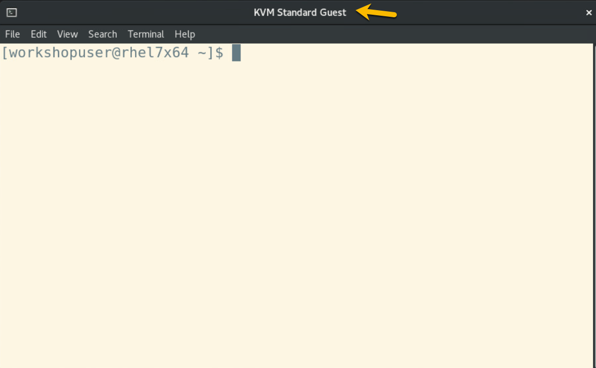

Launch HPVS guest for PayNow¶
You will start this section from your login session on the RHEL host. Start from this familiar window or tab:

launch the HPVS 2.1.4 KVM guest¶
This fancy command figures out (and displays) the last two characters of your assigned userid and is used in other commands in this section, so that the lab instructions will work for everybody:
suffix=$(temp=$(whoami) && echo ${temp: -2}) \
&& echo Your student suffix is ${suffix}
You aren't going to change anything here since it's already been defined for you by the instructors, but you can display the definition of your HPVS 2.1.4 KVM guest for the PayNow demo:
sudo virsh dumpxml paynowse${suffix}
Definition of HPVS KVM guest for PayNow Demo
<domain type='kvm'>
<name>paynowse04</name>
<uuid>2315f8ea-a340-4506-abbf-ae04cf7ea868</uuid>
<metadata>
<libosinfo:libosinfo xmlns:libosinfo="http://libosinfo.org/xmlns/libvirt/domain/1.0">
<libosinfo:os id="http://ubuntu.com/ubuntu/20.04"/>
</libosinfo:libosinfo>
</metadata>
<memory unit='KiB'>3903488</memory>
<currentMemory unit='KiB'>3903488</currentMemory>
<vcpu placement='static'>2</vcpu>
<os>
<type arch='s390x' machine='s390-ccw-virtio-rhel8.2.0'>hvm</type>
<boot dev='hd'/>
</os>
<cpu mode='host-model' check='partial'/>
<clock offset='utc'/>
<on_poweroff>destroy</on_poweroff>
<on_reboot>restart</on_reboot>
<on_crash>destroy</on_crash>
<devices>
<emulator>/usr/libexec/qemu-kvm</emulator>
<disk type='file' device='disk'>
<driver name='qemu' type='qcow2' iommu='on'/>
<source file='/var/lib/libvirt/images/labs/paynow/student04/ibm-hyper-protect-container-runtime-23.3.0.qcow2'/>
<backingStore/>
<target dev='vda' bus='virtio'/>
<address type='ccw' cssid='0xfe' ssid='0x0' devno='0x0000'/>
</disk>
<disk type='file' device='disk'>
<driver name='qemu' type='raw' cache='none' io='native' iommu='on'/>
<source file='/var/lib/libvirt/images/labs/paynow/student04/ciiso.iso'/>
<target dev='vdc' bus='virtio'/>
<readonly/>
<address type='ccw' cssid='0xfe' ssid='0x0' devno='0x0002'/>
</disk>
<controller type='pci' index='0' model='pci-root'/>
<interface type='network'>
<mac address='52:54:00:fc:6c:a8'/>
<source network='default'/>
<model type='virtio'/>
<driver name='vhost' iommu='on'/>
<address type='ccw' cssid='0xfe' ssid='0x0' devno='0x0001'/>
</interface>
<console type='pty'>
<target type='sclp' port='0'/>
</console>
<audio id='1' type='none'/>
<memballoon model='none'/>
<panic model='s390'/>
</devices>
</domain>
Start your HPVS Guest for the PayNow Demo and attach to its console. Watch the messages carefully. You should not see any failures:
sudo virsh start paynowse${suffix} --console
This is what success looks like
Domain 'paynowse04' started
Connected to domain 'paynowse04'
Escape character is ^] (Ctrl + ])
# HPL11 build:23.3.0 enabler:22.11.6
# Wed Apr 19 17:19:41 UTC 2023
# delete old root partition...
# create new root partition...
# encrypt root partition...
# create root filesystem...
# write OS to root disk...
# decrypt user-data...
2 token decrypted, 0 encrypted token ignored
# run attestation...
# set hostname...
# finish root disk setup...
# Wed Apr 19 17:20:06 UTC 2023
# HPL11 build:23.3.0 enabler:22.11.6
# HPL11099I: bootloader end
hpcr-dnslookup[908]: HPL14000I: Network connectivity check completed successfully.
hpcr-logging[1093]: Configuring logging ...
hpcr-logging[1094]: Version [1.1.91]
hpcr-logging[1094]: Configuring logging, input [/var/hyperprotect/user-data.decrypted] ...
hpcr-logging[1094]: HPL01010I: Logging has been setup successfully.
hpcr-logging[1093]: Logging has been configured
hpcr-catch-success[1440]: VSI has started successfully.
hpcr-catch-success[1440]: HPL10001I: Services succeeded -> systemd triggered hpl-catch-success service
You will have to enter the Ctrl + ] key-combination to break out of the console.
verify that messages from your HPVS KVM guest are received by rsyslog¶
The logging of the HPVS KVM guest is going to the rsyslog service that you configured on your Ubuntu guest, so switch to the terminal tab or window for your KVM standard guest.
You should still be comfortably logged in on this tab or window:

The arguments to the journalctl command here aren't the most elegant in the world, but, unless midnight passed since you started your HPVS KVM guest for PayNow, you will be able to see messages in rsyslog from when you just started up your HPVS KVM guest:
journalctl --since today --no-pager
There are a lot of messages logged, a veritable trove of treasure for the curious. Here is an example of what you should be able to see:
Log messages in rsyslog from starting your HPVS KVM guest for the PayNow demo
Apr 19 17:20:08 ubuntu2204 vpcnode[2719]: authentication probe
Apr 19 17:20:08 ubuntu2204 kernel[2719]: Linux version 5.4.0-144-generic (buildd@bos01-s390x-011) (gcc version 9.4.0 (Ubuntu 9.4.0-1ubuntu1~20.04.1)) #161-Ubuntu SMP Fri Feb 3 14:49:12 UTC 2023 (Ubuntu 5.4.0-144.161-generic 5.4.229)
Apr 19 17:20:08 ubuntu2204 kernel[2719]: setup.289988: Linux is running under KVM in 64-bit mode
Apr 19 17:20:08 ubuntu2204 kernel[2719]: setup.b050d0: The maximum memory size is 3812MB
Apr 19 17:20:08 ubuntu2204 kernel[2719]: numa.196305: NUMA mode: plain
Apr 19 17:20:08 ubuntu2204 kernel[2719]: cpu.33a262: 2 configured CPUs, 0 standby CPUs
Apr 19 17:20:08 ubuntu2204 kernel[2719]: Write protected kernel read-only data: 14936k
Apr 19 17:20:08 ubuntu2204 kernel[2719]: Zone ranges:
Apr 19 17:20:08 ubuntu2204 kernel[2719]: DMA [mem 0x0000000000000000-0x000000007fffffff]
Apr 19 17:20:08 ubuntu2204 kernel[2719]: Normal [mem 0x0000000080000000-0x00000000ee3fffff]
Apr 19 17:20:08 ubuntu2204 kernel[2719]: Movable zone start for each node
Apr 19 17:20:08 ubuntu2204 kernel[2719]: Early memory node ranges
Apr 19 17:20:08 ubuntu2204 kernel[2719]: node 0: [mem 0x0000000000000000-0x00000000ee3fffff]
Apr 19 17:20:08 ubuntu2204 kernel[2719]: Zeroed struct page in unavailable ranges: 7168 pages
Apr 19 17:20:08 ubuntu2204 kernel[2719]: Initmem setup node 0 [mem 0x0000000000000000-0x00000000ee3fffff]
Apr 19 17:20:08 ubuntu2204 kernel[2719]: On node 0 totalpages: 975872
Apr 19 17:20:08 ubuntu2204 kernel[2719]: DMA zone: 8192 pages used for memmap
Apr 19 17:20:08 ubuntu2204 kernel[2719]: DMA zone: 0 pages reserved
Apr 19 17:20:08 ubuntu2204 kernel[2719]: DMA zone: 524288 pages, LIFO batch:63
Apr 19 17:20:08 ubuntu2204 kernel[2719]: Normal zone: 7056 pages used for memmap
Apr 19 17:20:08 ubuntu2204 kernel[2719]: Normal zone: 451584 pages, LIFO batch:63
Apr 19 17:20:08 ubuntu2204 kernel[2719]: percpu: Embedded 34 pages/cpu s98816 r8192 d32256 u139264
Apr 19 17:20:08 ubuntu2204 kernel[2719]: pcpu-alloc: s98816 r8192 d32256 u139264 alloc=34*4096
Apr 19 17:20:08 ubuntu2204 kernel[2719]: pcpu-alloc: [0] 0 [0] 1
Apr 19 17:20:08 ubuntu2204 kernel[2719]: Built 1 zonelists, mobility grouping on. Total pages: 960624
Apr 19 17:20:08 ubuntu2204 kernel[2719]: Policy zone: Normal
Apr 19 17:20:08 ubuntu2204 kernel[2719]: Kernel command line: panic=0 blacklist=virtio_rng swiotlb=262144 cloud-init=disabled console=ttyS0 quiet loglevel=0 systemd.show_status=0 printk.time=0 systemd.getty_auto=0 systemd.firstboot=0 module.sig_enforce=1
Apr 19 17:20:08 ubuntu2204 kernel[2719]: Dentry cache hash table entries: 524288 (order: 10, 4194304 bytes, linear)
Apr 19 17:20:08 ubuntu2204 kernel[2719]: Inode-cache hash table entries: 262144 (order: 9, 2097152 bytes, linear)
Apr 19 17:20:08 ubuntu2204 kernel[2719]: mem auto-init: stack:off, heap alloc:on, heap free:off
Apr 19 17:20:08 ubuntu2204 kernel[2719]: software IO TLB: mapped [mem 0x5fffc000-0x7fffc000] (512MB)
Apr 19 17:20:08 ubuntu2204 kernel[2719]: Memory: 3277592K/3903488K available (9224K kernel code, 1708K rwdata, 5708K rodata, 3448K init, 948K bss, 625896K reserved, 0K cma-reserved)
Apr 19 17:20:08 ubuntu2204 kernel[2719]: SLUB: HWalign=256, Order=0-3, MinObjects=0, CPUs=2, Nodes=1
Apr 19 17:20:08 ubuntu2204 kernel[2719]: ftrace: allocating 29722 entries in 117 pages
Apr 19 17:20:08 ubuntu2204 kernel[2719]: rcu: Hierarchical RCU implementation.
Apr 19 17:20:08 ubuntu2204 kernel[2719]: rcu: #011RCU restricting CPUs from NR_CPUS=512 to nr_cpu_ids=2.
Apr 19 17:20:08 ubuntu2204 kernel[2719]: #011Tasks RCU enabled.
Apr 19 17:20:08 ubuntu2204 kernel[2719]: rcu: RCU calculated value of scheduler-enlistment delay is 10 jiffies.
Apr 19 17:20:08 ubuntu2204 kernel[2719]: rcu: Adjusting geometry for rcu_fanout_leaf=16, nr_cpu_ids=2
Apr 19 17:20:08 ubuntu2204 kernel[2719]: NR_IRQS: 3, nr_irqs: 3, preallocated irqs: 3
Apr 19 17:20:08 ubuntu2204 kernel[2719]: clocksource: tod: mask: 0xffffffffffffffff max_cycles: 0x3b0a9be803b0a9, max_idle_ns: 1805497147909793 ns
Apr 19 17:20:08 ubuntu2204 kernel[2719]: random: crng init done
Apr 19 17:20:08 ubuntu2204 kernel[2719]: Console: colour dummy device 80x25
Apr 19 17:20:08 ubuntu2204 kernel[2719]: printk: console [ttyS0] enabled
Apr 19 17:20:08 ubuntu2204 kernel[2719]: printk: console [ttysclp0] enabled
Apr 19 17:20:08 ubuntu2204 kernel[2719]: Calibrating delay loop (skipped)... 24038.00 BogoMIPS preset
Apr 19 17:20:08 ubuntu2204 kernel[2719]: pid_max: default: 32768 minimum: 301
Apr 19 17:20:08 ubuntu2204 kernel[2719]: LSM: Security Framework initializing
Apr 19 17:20:08 ubuntu2204 kernel[2719]: Yama: becoming mindful.
Apr 19 17:20:08 ubuntu2204 kernel[2719]: AppArmor: AppArmor initialized
Apr 19 17:20:08 ubuntu2204 kernel[2719]: Mount-cache hash table entries: 8192 (order: 4, 65536 bytes, linear)
Apr 19 17:20:08 ubuntu2204 kernel[2719]: Mountpoint-cache hash table entries: 8192 (order: 4, 65536 bytes, linear)
Apr 19 17:20:08 ubuntu2204 kernel[2719]: *** VALIDATE tmpfs ***
Apr 19 17:20:08 ubuntu2204 kernel[2719]: *** VALIDATE proc ***
Apr 19 17:20:08 ubuntu2204 kernel[2719]: *** VALIDATE cgroup1 ***
Apr 19 17:20:08 ubuntu2204 kernel[2719]: *** VALIDATE cgroup2 ***
Apr 19 17:20:08 ubuntu2204 kernel[2719]: rcu: Hierarchical SRCU implementation.
Apr 19 17:20:08 ubuntu2204 kernel[2719]: smp: Bringing up secondary CPUs ...
Apr 19 17:20:08 ubuntu2204 kernel[2719]: smp: Brought up 1 node, 2 CPUs
Apr 19 17:20:08 ubuntu2204 kernel[2719]: devtmpfs: initialized
Apr 19 17:20:08 ubuntu2204 kernel[2719]: clocksource: jiffies: mask: 0xffffffff max_cycles: 0xffffffff, max_idle_ns: 19112604462750000 ns
Apr 19 17:20:08 ubuntu2204 kernel[2719]: futex hash table entries: 512 (order: 5, 131072 bytes, linear)
Apr 19 17:20:08 ubuntu2204 kernel[2719]: NET: Registered protocol family 16
Apr 19 17:20:08 ubuntu2204 kernel[2719]: audit: initializing netlink subsys (disabled)
Apr 19 17:20:08 ubuntu2204 kernel[2719]: audit: type=2000 audit(1681924781.332:1): state=initialized audit_enabled=0 res=1
Apr 19 17:20:08 ubuntu2204 kernel[2719]: Spectre V2 mitigation: etokens
Apr 19 17:20:08 ubuntu2204 kernel[2719]: HugeTLB registered 1.00 MiB page size, pre-allocated 0 pages
Apr 19 17:20:08 ubuntu2204 kernel[2719]: iommu: Default domain type: Translated
Apr 19 17:20:08 ubuntu2204 kernel[2719]: SCSI subsystem initialized
Apr 19 17:20:08 ubuntu2204 kernel[2719]: NetLabel: Initializing
Apr 19 17:20:08 ubuntu2204 kernel[2719]: NetLabel: domain hash size = 128
Apr 19 17:20:08 ubuntu2204 kernel[2719]: NetLabel: protocols = UNLABELED CIPSOv4 CALIPSO
Apr 19 17:20:08 ubuntu2204 kernel[2719]: NetLabel: unlabeled traffic allowed by default
Apr 19 17:20:08 ubuntu2204 kernel[2719]: *** VALIDATE bpf ***
Apr 19 17:20:08 ubuntu2204 kernel[2719]: VFS: Disk quotas dquot_6.6.0
Apr 19 17:20:08 ubuntu2204 kernel[2719]: VFS: Dquot-cache hash table entries: 512 (order 0, 4096 bytes)
Apr 19 17:20:08 ubuntu2204 kernel[2719]: *** VALIDATE ramfs ***
Apr 19 17:20:08 ubuntu2204 kernel[2719]: *** VALIDATE hugetlbfs ***
Apr 19 17:20:08 ubuntu2204 kernel[2719]: AppArmor: AppArmor Filesystem Enabled
Apr 19 17:20:08 ubuntu2204 kernel[2719]: NET: Registered protocol family 2
Apr 19 17:20:08 ubuntu2204 kernel[2719]: IP idents hash table entries: 65536 (order: 7, 524288 bytes, linear)
Apr 19 17:20:08 ubuntu2204 kernel[2719]: tcp_listen_portaddr_hash hash table entries: 2048 (order: 3, 32768 bytes, linear)
Apr 19 17:20:08 ubuntu2204 kernel[2719]: TCP established hash table entries: 32768 (order: 6, 262144 bytes, linear)
Apr 19 17:20:08 ubuntu2204 kernel[2719]: TCP bind hash table entries: 32768 (order: 7, 524288 bytes, linear)
Apr 19 17:20:08 ubuntu2204 kernel[2719]: TCP: Hash tables configured (established 32768 bind 32768)
Apr 19 17:20:08 ubuntu2204 kernel[2719]: UDP hash table entries: 2048 (order: 4, 65536 bytes, linear)
Apr 19 17:20:08 ubuntu2204 kernel[2719]: UDP-Lite hash table entries: 2048 (order: 4, 65536 bytes, linear)
Apr 19 17:20:08 ubuntu2204 kernel[2719]: NET: Registered protocol family 1
Apr 19 17:20:08 ubuntu2204 kernel[2719]: NET: Registered protocol family 44
Apr 19 17:20:08 ubuntu2204 kernel[2719]: Trying to unpack rootfs image as initramfs...
Apr 19 17:20:08 ubuntu2204 kernel[2719]: Freeing initrd memory: 8812K
Apr 19 17:20:08 ubuntu2204 kernel[2719]: kvm-s390.a3074b: SIE is not available
Apr 19 17:20:08 ubuntu2204 kernel[2719]: hypfs.7f5705: The hardware system does not support hypfs
Apr 19 17:20:08 ubuntu2204 kernel[2719]: Initialise system trusted keyrings
Apr 19 17:20:08 ubuntu2204 kernel[2719]: Key type blacklist registered
Apr 19 17:20:08 ubuntu2204 kernel[2719]: workingset: timestamp_bits=42 max_order=20 bucket_order=0
Apr 19 17:20:08 ubuntu2204 kernel[2719]: zbud: loaded
Apr 19 17:20:08 ubuntu2204 kernel[2719]: squashfs: version 4.0 (2009/01/31) Phillip Lougher
Apr 19 17:20:08 ubuntu2204 kernel[2719]: fuse: init (API version 7.31)
Apr 19 17:20:08 ubuntu2204 kernel[2719]: *** VALIDATE fuse ***
Apr 19 17:20:08 ubuntu2204 kernel[2719]: *** VALIDATE fuse ***
Apr 19 17:20:08 ubuntu2204 kernel[2719]: Platform Keyring initialized
Apr 19 17:20:08 ubuntu2204 kernel[2719]: Key type asymmetric registered
Apr 19 17:20:08 ubuntu2204 kernel[2719]: Asymmetric key parser 'x509' registered
Apr 19 17:20:08 ubuntu2204 kernel[2719]: Block layer SCSI generic (bsg) driver version 0.4 loaded (major 250)
Apr 19 17:20:08 ubuntu2204 kernel[2719]: io scheduler mq-deadline registered
Apr 19 17:20:08 ubuntu2204 kernel[2719]: hvc_iucv.691dff: The z/VM IUCV HVC device driver cannot be used without z/VM
Apr 19 17:20:08 ubuntu2204 kernel[2719]: loop: module loaded
Apr 19 17:20:08 ubuntu2204 kernel[2719]: tun: Universal TUN/TAP device driver, 1.6
Apr 19 17:20:08 ubuntu2204 kernel[2719]: device-mapper: uevent: version 1.0.3
Apr 19 17:20:08 ubuntu2204 kernel[2719]: device-mapper: ioctl: 4.41.0-ioctl (2019-09-16) initialised: dm-devel@redhat.com
Apr 19 17:20:08 ubuntu2204 kernel[2719]: cio.b5d5f6: Channel measurement facility initialized using format extended (mode autodetected)
Apr 19 17:20:08 ubuntu2204 kernel[2719]: sclp_sd.ef2911: Store Data request failed (eq=2, di=3, response=0x40f0, flags=0x00, status=0, rc=-5)
Apr 19 17:20:08 ubuntu2204 kernel[2719]: ap.3677f7: The hardware system does not support AP instructions
Apr 19 17:20:08 ubuntu2204 kernel[2719]: drop_monitor: Initializing network drop monitor service
Apr 19 17:20:08 ubuntu2204 kernel[2719]: NET: Registered protocol family 10
Apr 19 17:20:08 ubuntu2204 kernel[2719]: Segment Routing with IPv6
Apr 19 17:20:08 ubuntu2204 kernel[2719]: NET: Registered protocol family 17
Apr 19 17:20:08 ubuntu2204 kernel[2719]: Key type dns_resolver registered
Apr 19 17:20:08 ubuntu2204 kernel[2719]: registered taskstats version 1
Apr 19 17:20:08 ubuntu2204 kernel[2719]: Loading compiled-in X.509 certificates
Apr 19 17:20:08 ubuntu2204 kernel[2719]: Loaded X.509 cert 'Build time autogenerated kernel key: 5f0cb9c1f10704616ad12479fd9849261a80ea8c'
Apr 19 17:20:08 ubuntu2204 kernel[2719]: Loaded X.509 cert 'Canonical Ltd. Live Patch Signing: 14df34d1a87cf37625abec039ef2bf521249b969'
Apr 19 17:20:08 ubuntu2204 kernel[2719]: Loaded X.509 cert 'Canonical Ltd. Kernel Module Signing: 88f752e560a1e0737e31163a466ad7b70a850c19'
Apr 19 17:20:08 ubuntu2204 kernel[2719]: blacklist: Loading compiled-in revocation X.509 certificates
Apr 19 17:20:08 ubuntu2204 kernel[2719]: Loaded X.509 cert 'Canonical Ltd. Secure Boot Signing: 61482aa2830d0ab2ad5af10b7250da9033ddcef0'
Apr 19 17:20:08 ubuntu2204 kernel[2719]: Loaded X.509 cert 'Canonical Ltd. Secure Boot Signing (2017): 242ade75ac4a15e50d50c84b0d45ff3eae707a03'
Apr 19 17:20:08 ubuntu2204 kernel[2719]: Loaded X.509 cert 'Canonical Ltd. Secure Boot Signing (ESM 2018): 365188c1d374d6b07c3c8f240f8ef722433d6a8b'
Apr 19 17:20:08 ubuntu2204 kernel[2719]: Loaded X.509 cert 'Canonical Ltd. Secure Boot Signing (2019): c0746fd6c5da3ae827864651ad66ae47fe24b3e8'
Apr 19 17:20:08 ubuntu2204 kernel[2719]: Loaded X.509 cert 'Canonical Ltd. Secure Boot Signing (2021 v1): a8d54bbb3825cfb94fa13c9f8a594a195c107b8d'
Apr 19 17:20:08 ubuntu2204 kernel[2719]: Loaded X.509 cert 'Canonical Ltd. Secure Boot Signing (2021 v2): 4cf046892d6fd3c9a5b03f98d845f90851dc6a8c'
Apr 19 17:20:08 ubuntu2204 kernel[2719]: Loaded X.509 cert 'Canonical Ltd. Secure Boot Signing (2021 v3): 100437bb6de6e469b581e61cd66bce3ef4ed53af'
Apr 19 17:20:08 ubuntu2204 kernel[2719]: Loaded X.509 cert 'Canonical Ltd. Secure Boot Signing (Ubuntu Core 2019): c1d57b8f6b743f23ee41f4f7ee292f06eecadfb9'
Apr 19 17:20:08 ubuntu2204 kernel[2719]: zswap: loaded using pool lzo/zbud
Apr 19 17:20:08 ubuntu2204 kernel[2719]: Key type ._fscrypt registered
Apr 19 17:20:08 ubuntu2204 kernel[2719]: Key type .fscrypt registered
Apr 19 17:20:08 ubuntu2204 kernel[2719]: Key type big_key registered
Apr 19 17:20:08 ubuntu2204 kernel[2719]: Key type encrypted registered
Apr 19 17:20:08 ubuntu2204 kernel[2719]: AppArmor: AppArmor sha1 policy hashing enabled
Apr 19 17:20:08 ubuntu2204 kernel[2719]: ima: No TPM chip found, activating TPM-bypass!
Apr 19 17:20:08 ubuntu2204 kernel[2719]: ima: Allocated hash algorithm: sha1
Apr 19 17:20:08 ubuntu2204 kernel[2719]: ima: No architecture policies found
Apr 19 17:20:08 ubuntu2204 kernel[2719]: evm: Initialising EVM extended attributes:
Apr 19 17:20:08 ubuntu2204 kernel[2719]: evm: security.selinux
Apr 19 17:20:08 ubuntu2204 kernel[2719]: evm: security.SMACK64
Apr 19 17:20:08 ubuntu2204 kernel[2719]: evm: security.SMACK64EXEC
Apr 19 17:20:08 ubuntu2204 kernel[2719]: evm: security.SMACK64TRANSMUTE
Apr 19 17:20:08 ubuntu2204 kernel[2719]: evm: security.SMACK64MMAP
Apr 19 17:20:08 ubuntu2204 kernel[2719]: evm: security.apparmor
Apr 19 17:20:08 ubuntu2204 kernel[2719]: evm: security.ima
Apr 19 17:20:08 ubuntu2204 kernel[2719]: evm: security.capability
Apr 19 17:20:08 ubuntu2204 kernel[2719]: evm: HMAC attrs: 0x1
Apr 19 17:20:08 ubuntu2204 kernel[2719]: Freeing unused kernel memory: 3448K
Apr 19 17:20:08 ubuntu2204 kernel[2719]: Write protected read-only-after-init data: 88k
Apr 19 17:20:08 ubuntu2204 kernel[2719]: Run /init as init process
Apr 19 17:20:08 ubuntu2204 kernel[2719]: virtio_blk virtio0: [vda] 209715200 512-byte logical blocks (107 GB/100 GiB)
Apr 19 17:20:08 ubuntu2204 kernel[2719]: vda: vda1 vda2
Apr 19 17:20:08 ubuntu2204 kernel[2719]: virtio_blk virtio1: [vdb] 760 512-byte logical blocks (389 kB/380 KiB)
Apr 19 17:20:08 ubuntu2204 kernel[2719]: EXT4-fs (dm-0): mounted filesystem with ordered data mode. Opts: (null)
Apr 19 17:20:08 ubuntu2204 kernel[2719]: EXT4-fs (vda1): mounted filesystem with ordered data mode. Opts: (null)
Apr 19 17:20:08 ubuntu2204 kernel[2719]: ISO 9660 Extensions: Microsoft Joliet Level 3
Apr 19 17:20:08 ubuntu2204 kernel[2719]: ISO 9660 Extensions: RRIP_1991A
Apr 19 17:20:08 ubuntu2204 kernel[2719]: EXT4-fs (dm-0): re-mounted. Opts: (null)
Apr 19 17:20:08 ubuntu2204 systemd[2719]: systemd 245.4-4ubuntu3.19 running in system mode. (+PAM +AUDIT +SELINUX +IMA +APPARMOR +SMACK +SYSVINIT +UTMP +LIBCRYPTSETUP +GCRYPT +GNUTLS +ACL +XZ +LZ4 +SECCOMP +BLKID +ELFUTILS +KMOD +IDN2 -IDN +PCRE2 default-hierarchy=hybrid)
Apr 19 17:20:08 ubuntu2204 systemd[2719]: Detected virtualization kvm.
Apr 19 17:20:08 ubuntu2204 systemd[2719]: Detected architecture s390x.
Apr 19 17:20:08 ubuntu2204 systemd[2719]: Set hostname to <student04-paynowdemo>.
Apr 19 17:20:08 ubuntu2204 systemd[2719]: Initializing machine ID from D-Bus machine ID.
Apr 19 17:20:08 ubuntu2204 systemd[2719]: Installed transient /etc/machine-id file.
Apr 19 17:20:08 ubuntu2204 systemd[2719]: /usr/lib/systemd/system-generators/s390-cpi-vars failed with exit status 1.
Apr 19 17:20:08 ubuntu2204 systemd[2719]: Created slice system-modprobe.slice.
Apr 19 17:20:08 ubuntu2204 systemd[2719]: Created slice system-systemd\x2dfsck.slice.
Apr 19 17:20:08 ubuntu2204 systemd[2719]: Created slice User and Session Slice.
Apr 19 17:20:08 ubuntu2204 systemd[2719]: Started Forward Password Requests to Wall Directory Watch.
Apr 19 17:20:08 ubuntu2204 systemd[2719]: Set up automount Arbitrary Executable File Formats File System Automount Point.
Apr 19 17:20:08 ubuntu2204 systemd[2719]: Reached target Slices.
Apr 19 17:20:08 ubuntu2204 systemd[2719]: Reached target Swap.
Apr 19 17:20:08 ubuntu2204 systemd[2719]: Listening on Device-mapper event daemon FIFOs.
Apr 19 17:20:08 ubuntu2204 systemd[2719]: Listening on LVM2 poll daemon socket.
Apr 19 17:20:08 ubuntu2204 systemd[2719]: Listening on multipathd control socket.
Apr 19 17:20:08 ubuntu2204 systemd[2719]: Listening on Syslog Socket.
Apr 19 17:20:08 ubuntu2204 systemd[2719]: Listening on fsck to fsckd communication Socket.
Apr 19 17:20:08 ubuntu2204 systemd[2719]: Listening on initctl Compatibility Named Pipe.
Apr 19 17:20:08 ubuntu2204 systemd[2719]: Listening on Journal Audit Socket.
Apr 19 17:20:08 ubuntu2204 systemd[2719]: Listening on Journal Socket (/dev/log).
Apr 19 17:20:08 ubuntu2204 systemd[2719]: Listening on Journal Socket.
Apr 19 17:20:08 ubuntu2204 systemd[2719]: Listening on Network Service Netlink Socket.
Apr 19 17:20:08 ubuntu2204 systemd[2719]: Listening on udev Control Socket.
Apr 19 17:20:08 ubuntu2204 systemd[2719]: Listening on udev Kernel Socket.
Apr 19 17:20:08 ubuntu2204 systemd[2719]: Mounting Huge Pages File System...
Apr 19 17:20:08 ubuntu2204 systemd[2719]: Mounting POSIX Message Queue File System...
Apr 19 17:20:08 ubuntu2204 systemd[2719]: Mounting Kernel Debug File System...
Apr 19 17:20:08 ubuntu2204 systemd[2719]: Mounting Kernel Trace File System...
Apr 19 17:20:08 ubuntu2204 systemd[2719]: Starting Journal Service...
Apr 19 17:20:08 ubuntu2204 systemd[2719]: Starting Set the console keyboard layout...
Apr 19 17:20:08 ubuntu2204 systemd[2719]: Starting Create list of static device nodes for the current kernel...
Apr 19 17:20:08 ubuntu2204 systemd[2719]: Starting Monitoring of LVM2 mirrors, snapshots etc. using dmeventd or progress polling...
Apr 19 17:20:08 ubuntu2204 systemd[2719]: Starting Load Kernel Module chromeos_pstore...
Apr 19 17:20:08 ubuntu2204 systemd[2719]: Starting Load Kernel Module drm...
Apr 19 17:20:08 ubuntu2204 systemd[2719]: Starting Load Kernel Module efi_pstore...
Apr 19 17:20:08 ubuntu2204 systemd[2719]: Starting Load Kernel Module pstore_blk...
Apr 19 17:20:08 ubuntu2204 systemd[2719]: Starting Load Kernel Module pstore_zone...
Apr 19 17:20:08 ubuntu2204 systemd[2719]: Starting Load Kernel Module ramoops...
Apr 19 17:20:08 ubuntu2204 systemd[2719]: Condition check resulted in OpenVSwitch configuration for cleanup being skipped.
Apr 19 17:20:08 ubuntu2204 systemd[2719]: Condition check resulted in Set Up Additional Binary Formats being skipped.
Apr 19 17:20:08 ubuntu2204 systemd[2719]: Starting File System Check on Root Device...
Apr 19 17:20:08 ubuntu2204 systemd[2719]: Starting Load Kernel Modules...
Apr 19 17:20:08 ubuntu2204 systemd[2719]: Starting udev Coldplug all Devices...
Apr 19 17:20:08 ubuntu2204 systemd[2719]: Mounted Huge Pages File System.
Apr 19 17:20:08 ubuntu2204 systemd[2719]: Mounted POSIX Message Queue File System.
Apr 19 17:20:08 ubuntu2204 systemd[2719]: Mounted Kernel Debug File System.
Apr 19 17:20:08 ubuntu2204 systemd[2719]: Mounted Kernel Trace File System.
Apr 19 17:20:08 ubuntu2204 systemd[2719]: Finished Create list of static device nodes for the current kernel.
Apr 19 17:20:08 ubuntu2204 systemd[2719]: Finished Load Kernel Modules.
Apr 19 17:20:08 ubuntu2204 systemd[2719]: Mounting FUSE Control File System...
Apr 19 17:20:08 ubuntu2204 systemd[2719]: Mounting Kernel Configuration File System...
Apr 19 17:20:08 ubuntu2204 systemd[2719]: Starting Apply Kernel Variables...
Apr 19 17:20:08 ubuntu2204 systemd[2719]: Mounted Kernel Configuration File System.
Apr 19 17:20:08 ubuntu2204 systemd[2719]: modprobe@pstore_blk.service: Succeeded.
Apr 19 17:20:08 ubuntu2204 systemd[2719]: Finished Load Kernel Module pstore_blk.
Apr 19 17:20:08 ubuntu2204 systemd[2719]: modprobe@pstore_zone.service: Succeeded.
Apr 19 17:20:08 ubuntu2204 systemd[2719]: Finished Load Kernel Module pstore_zone.
Apr 19 17:20:08 ubuntu2204 systemd[2719]: modprobe@ramoops.service: Succeeded.
Apr 19 17:20:08 ubuntu2204 systemd[2719]: Finished Load Kernel Module ramoops.
Apr 19 17:20:08 ubuntu2204 systemd[2719]: Started File System Check Daemon to report status.
Apr 19 17:20:08 ubuntu2204 systemd[2719]: Mounted FUSE Control File System.
Apr 19 17:20:08 ubuntu2204 systemd[2719]: Finished File System Check on Root Device.
Apr 19 17:20:08 ubuntu2204 systemd[2719]: Starting Remount Root and Kernel File Systems...
Apr 19 17:20:08 ubuntu2204 systemd[2719]: modprobe@drm.service: Succeeded.
Apr 19 17:20:08 ubuntu2204 systemd[2719]: Finished Load Kernel Module drm.
Apr 19 17:20:08 ubuntu2204 systemd[2719]: Finished Apply Kernel Variables.
Apr 19 17:20:08 ubuntu2204 kernel[2719]: EXT4-fs (dm-0): re-mounted. Opts: errors=remount-ro
Apr 19 17:20:08 ubuntu2204 systemd[2719]: Finished Remount Root and Kernel File Systems.
Apr 19 17:20:08 ubuntu2204 systemd[2719]: Condition check resulted in Rebuild Hardware Database being skipped.
Apr 19 17:20:08 ubuntu2204 systemd[2719]: Starting Load/Save Random Seed...
Apr 19 17:20:08 ubuntu2204 systemd[2719]: Starting Create System Users...
Apr 19 17:20:08 ubuntu2204 systemd[2719]: modprobe@chromeos_pstore.service: Succeeded.
Apr 19 17:20:08 ubuntu2204 systemd[2719]: Finished Load Kernel Module chromeos_pstore.
Apr 19 17:20:08 ubuntu2204 systemd[2719]: Finished Create System Users.
Apr 19 17:20:08 ubuntu2204 systemd[2719]: modprobe@efi_pstore.service: Succeeded.
Apr 19 17:20:08 ubuntu2204 systemd[2719]: Finished Load Kernel Module efi_pstore.
Apr 19 17:20:08 ubuntu2204 systemd[2719]: Condition check resulted in Platform Persistent Storage Archival being skipped.
Apr 19 17:20:08 ubuntu2204 systemd[2719]: Starting Create Static Device Nodes in /dev...
Apr 19 17:20:08 ubuntu2204 systemd[2719]: Finished Load/Save Random Seed.
Apr 19 17:20:08 ubuntu2204 systemd[2719]: Finished Create Static Device Nodes in /dev.
Apr 19 17:20:08 ubuntu2204 systemd[2719]: Starting udev Kernel Device Manager...
Apr 19 17:20:08 ubuntu2204 systemd[2719]: Finished udev Coldplug all Devices.
Apr 19 17:20:08 ubuntu2204 systemd[2719]: Starting udev Wait for Complete Device Initialization...
Apr 19 17:20:08 ubuntu2204 systemd[2719]: Started udev Kernel Device Manager.
Apr 19 17:20:08 ubuntu2204 systemd[2719]: Starting Network Service...
Apr 19 17:20:08 ubuntu2204 systemd-journald[2719]: Journal started
Apr 19 17:20:08 ubuntu2204 systemd-journald[2719]: Runtime Journal (/run/log/journal/35e9ca59782642a5b263307adaa2d26e) is 4.0M, max 32.1M, 28.1M free.
Apr 19 17:20:08 ubuntu2204 systemd[2719]: Started Journal Service.
Apr 19 17:20:08 ubuntu2204 systemd-modules-load[2719]: Failed to find module 'ipmi-devintf'
Apr 19 17:20:08 ubuntu2204 systemd-journald[2719]: Time spent on flushing to /var/log/journal/35e9ca59782642a5b263307adaa2d26e is 1.683ms for 253 entries.
Apr 19 17:20:08 ubuntu2204 systemd-journald[2719]: System Journal (/var/log/journal/35e9ca59782642a5b263307adaa2d26e) is 8.0M, max 4.0G, 3.9G free.
Apr 19 17:20:08 ubuntu2204 systemd-sysctl[2719]: Not setting net/ipv4/conf/all/promote_secondaries (explicit setting exists).
Apr 19 17:20:08 ubuntu2204 systemd-sysctl[2719]: Not setting net/ipv4/conf/default/promote_secondaries (explicit setting exists).
Apr 19 17:20:08 ubuntu2204 systemd[2719]: Starting Flush Journal to Persistent Storage...
Apr 19 17:20:08 ubuntu2204 systemd-networkd[2719]: Enumeration completed
Apr 19 17:20:08 ubuntu2204 systemd[2719]: Started Network Service.
Apr 19 17:20:08 ubuntu2204 systemd[2719]: Starting Wait for Network to be Configured...
Apr 19 17:20:08 ubuntu2204 systemd[2719]: Finished Flush Journal to Persistent Storage.
Apr 19 17:20:08 ubuntu2204 systemd-fsck[2719]: /dev/mapper/luks-6c4b93a2-1091-445e-a6fe-34c252d5d301: clean, 27573/6291456 files, 784851/25161728 blocks
Apr 19 17:20:08 ubuntu2204 systemd[2719]: Finished Wait for Network to be Configured.
Apr 19 17:20:08 ubuntu2204 systemd[2719]: Finished Set the console keyboard layout.
Apr 19 17:20:08 ubuntu2204 systemd[2719]: Condition check resulted in Show Plymouth Boot Screen being skipped.
Apr 19 17:20:08 ubuntu2204 systemd[2719]: Started Dispatch Password Requests to Console Directory Watch.
Apr 19 17:20:08 ubuntu2204 systemd[2719]: Condition check resulted in Forward Password Requests to Plymouth Directory Watch being skipped.
Apr 19 17:20:08 ubuntu2204 systemd[2719]: Reached target Local Encrypted Volumes.
Apr 19 17:20:08 ubuntu2204 systemd[2719]: Reached target Paths.
Apr 19 17:20:08 ubuntu2204 kernel[2719]: VFIO - User Level meta-driver version: 0.3
Apr 19 17:20:08 ubuntu2204 systemd-udevd[2719]: ethtool: autonegotiation is unset or enabled, the speed and duplex are not writable.
Apr 19 17:20:08 ubuntu2204 systemd[2719]: Found device /dev/disk/by-uuid/5cd13001-0812-4947-ac7e-bf5bb9f93e6d.
Apr 19 17:20:08 ubuntu2204 systemd-udevd[2719]: Using default interface naming scheme 'v245'.
Apr 19 17:20:08 ubuntu2204 systemd-udevd[2719]: ethtool: autonegotiation is unset or enabled, the speed and duplex are not writable.
Apr 19 17:20:08 ubuntu2204 udevadm[2719]: systemd-udev-settle.service is deprecated.
Apr 19 17:20:08 ubuntu2204 kernel[2719]: virtio_net virtio2 enc1: renamed from eth0
Apr 19 17:20:08 ubuntu2204 systemd-networkd[2719]: eth0: Interface name change detected, eth0 has been renamed to enc1.
Apr 19 17:20:08 ubuntu2204 systemd-udevd[2719]: Using default interface naming scheme 'v245'.
Apr 19 17:20:08 ubuntu2204 systemd-udevd[2719]: ethtool: autonegotiation is unset or enabled, the speed and duplex are not writable.
Apr 19 17:20:08 ubuntu2204 systemd-networkd[2719]: enc1: IPv6 successfully enabled
Apr 19 17:20:08 ubuntu2204 systemd-networkd[2719]: enc1: Link UP
Apr 19 17:20:08 ubuntu2204 systemd[2719]: Finished udev Wait for Complete Device Initialization.
Apr 19 17:20:08 ubuntu2204 systemd[2719]: Starting Device-Mapper Multipath Device Controller...
Apr 19 17:20:08 ubuntu2204 multipathd[2719]: --------start up--------
Apr 19 17:20:08 ubuntu2204 multipathd[2719]: read /etc/multipath.conf
Apr 19 17:20:08 ubuntu2204 kernel[2719]: alua: device handler registered
Apr 19 17:20:08 ubuntu2204 kernel[2719]: emc: device handler registered
Apr 19 17:20:08 ubuntu2204 kernel[2719]: rdac: device handler registered
Apr 19 17:20:08 ubuntu2204 multipathd[2719]: path checkers start up
Apr 19 17:20:08 ubuntu2204 systemd[2719]: Started Device-Mapper Multipath Device Controller.
Apr 19 17:20:08 ubuntu2204 systemd[2719]: Finished Monitoring of LVM2 mirrors, snapshots etc. using dmeventd or progress polling.
Apr 19 17:20:08 ubuntu2204 systemd[2719]: Reached target Local File Systems (Pre).
Apr 19 17:20:08 ubuntu2204 systemd[2719]: Starting File System Check on /dev/disk/by-uuid/5cd13001-0812-4947-ac7e-bf5bb9f93e6d...
Apr 19 17:20:08 ubuntu2204 systemd-fsck[2719]: /dev/vda1: clean, 13/262144 files, 118810/1048064 blocks
Apr 19 17:20:08 ubuntu2204 systemd[2719]: Finished File System Check on /dev/disk/by-uuid/5cd13001-0812-4947-ac7e-bf5bb9f93e6d.
Apr 19 17:20:08 ubuntu2204 systemd[2719]: Mounting /boot...
Apr 19 17:20:08 ubuntu2204 systemd[2719]: Mounted /boot.
Apr 19 17:20:08 ubuntu2204 systemd[2719]: Reached target Local File Systems.
Apr 19 17:20:08 ubuntu2204 systemd[2719]: Starting Set console font and keymap...
Apr 19 17:20:08 ubuntu2204 systemd[2719]: Starting Apply Control Program Identification (CPI)...
Apr 19 17:20:08 ubuntu2204 systemd[2719]: Starting Create final runtime dir for shutdown pivot root...
Apr 19 17:20:08 ubuntu2204 systemd[2719]: Condition check resulted in LXD - agent - 9p mount being skipped.
Apr 19 17:20:08 ubuntu2204 systemd[2719]: Condition check resulted in LXD - agent being skipped.
Apr 19 17:20:08 ubuntu2204 systemd[2719]: Starting Tell Plymouth To Write Out Runtime Data...
Apr 19 17:20:08 ubuntu2204 systemd[2719]: Condition check resulted in Store a System Token in an EFI Variable being skipped.
Apr 19 17:20:08 ubuntu2204 systemd[2719]: Starting Commit a transient machine-id on disk...
Apr 19 17:20:08 ubuntu2204 systemd[2719]: Starting Create Volatile Files and Directories...
Apr 19 17:20:08 ubuntu2204 systemd[2719]: Finished Create final runtime dir for shutdown pivot root.
Apr 19 17:20:08 ubuntu2204 kernel[2719]: EXT4-fs (vda1): mounted filesystem with ordered data mode. Opts: (null)
Apr 19 17:20:08 ubuntu2204 systemd[2719]: Finished Set console font and keymap.
Apr 19 17:20:08 ubuntu2204 systemd[2719]: etc-machine\x2did.mount: Succeeded.
Apr 19 17:20:08 ubuntu2204 systemd[2719]: Finished Commit a transient machine-id on disk.
Apr 19 17:20:08 ubuntu2204 systemd[2719]: plymouth-read-write.service: Succeeded.
Apr 19 17:20:08 ubuntu2204 systemd[2719]: Finished Tell Plymouth To Write Out Runtime Data.
Apr 19 17:20:08 ubuntu2204 systemd[2719]: Finished Create Volatile Files and Directories.
Apr 19 17:20:08 ubuntu2204 systemd[2719]: Starting Network Name Resolution...
Apr 19 17:20:08 ubuntu2204 systemd[2719]: Starting Network Time Synchronization...
Apr 19 17:20:08 ubuntu2204 systemd[2719]: Starting Update UTMP about System Boot/Shutdown...
Apr 19 17:20:08 ubuntu2204 systemd[2719]: Finished Update UTMP about System Boot/Shutdown.
Apr 19 17:20:08 ubuntu2204 cpictl[2719]: /lib/s390-tools/cpictl: line 112: echo: write error: Operation not supported
Apr 19 17:20:08 ubuntu2204 systemd[2719]: cpi.service: Succeeded.
Apr 19 17:20:08 ubuntu2204 systemd[2719]: Finished Apply Control Program Identification (CPI).
Apr 19 17:20:08 ubuntu2204 systemd-resolved[2719]: Positive Trust Anchors:
Apr 19 17:20:08 ubuntu2204 systemd-resolved[2719]: . IN DS 20326 8 2 e06d44b80b8f1d39a95c0b0d7c65d08458e880409bbc683457104237c7f8ec8d
Apr 19 17:20:08 ubuntu2204 systemd-resolved[2719]: Negative trust anchors: 10.in-addr.arpa 16.172.in-addr.arpa 17.172.in-addr.arpa 18.172.in-addr.arpa 19.172.in-addr.arpa 20.172.in-addr.arpa 21.172.in-addr.arpa 22.172.in-addr.arpa 23.172.in-addr.arpa 24.172.in-addr.arpa 25.172.in-addr.arpa 26.172.in-addr.arpa 27.172.in-addr.arpa 28.172.in-addr.arpa 29.172.in-addr.arpa 30.172.in-addr.arpa 31.172.in-addr.arpa 168.192.in-addr.arpa d.f.ip6.arpa corp home internal intranet lan local private test
Apr 19 17:20:08 ubuntu2204 systemd[2719]: Started Network Time Synchronization.
Apr 19 17:20:08 ubuntu2204 systemd[2719]: Reached target System Initialization.
Apr 19 17:20:08 ubuntu2204 systemd[2719]: Started Daily Cleanup of Temporary Directories.
Apr 19 17:20:08 ubuntu2204 systemd[2719]: Reached target System Time Set.
Apr 19 17:20:08 ubuntu2204 systemd[2719]: Reached target System Time Synchronized.
Apr 19 17:20:08 ubuntu2204 systemd[2719]: Started Daily apt download activities.
Apr 19 17:20:08 ubuntu2204 systemd[2719]: Started Daily apt upgrade and clean activities.
Apr 19 17:20:08 ubuntu2204 systemd[2719]: Started Periodic ext4 Online Metadata Check for All Filesystems.
Apr 19 17:20:08 ubuntu2204 systemd[2719]: Started Discard unused blocks once a week.
Apr 19 17:20:08 ubuntu2204 systemd[2719]: Started Refresh fwupd metadata regularly.
Apr 19 17:20:08 ubuntu2204 systemd[2719]: Started Daily rotation of log files.
Apr 19 17:20:08 ubuntu2204 systemd[2719]: Started Daily man-db regeneration.
Apr 19 17:20:08 ubuntu2204 systemd[2719]: Started Message of the Day.
Apr 19 17:20:08 ubuntu2204 systemd[2719]: Started Timer for calling verify disk encryption invoker service.
Apr 19 17:20:08 ubuntu2204 systemd[2719]: Reached target Timers.
Apr 19 17:20:08 ubuntu2204 systemd[2719]: Listening on D-Bus System Message Bus Socket.
Apr 19 17:20:08 ubuntu2204 systemd[2719]: Starting Docker Socket for the API.
Apr 19 17:20:08 ubuntu2204 systemd[2719]: Listening on Open-iSCSI iscsid Socket.
Apr 19 17:20:08 ubuntu2204 systemd[2719]: Listening on UUID daemon activation socket.
Apr 19 17:20:08 ubuntu2204 systemd[2719]: Listening on Docker Socket for the API.
Apr 19 17:20:08 ubuntu2204 systemd[2719]: Reached target Sockets.
Apr 19 17:20:08 ubuntu2204 systemd[2719]: Reached target Basic System.
Apr 19 17:20:08 ubuntu2204 systemd[2719]: Condition check resulted in CPACF statistics collection daemon process for Linux on System z being skipped.
Apr 19 17:20:08 ubuntu2204 systemd[2719]: Started D-Bus System Message Bus.
Apr 19 17:20:08 ubuntu2204 systemd[2719]: Started Save initial kernel messages after boot.
Apr 19 17:20:08 ubuntu2204 systemd[2719]: Starting Remove Stale Online ext4 Metadata Check Snapshots...
Apr 19 17:20:08 ubuntu2204 systemd[2719]: Starting Discard unused blocks on filesystems from /etc/fstab...
Apr 19 17:20:08 ubuntu2204 systemd[2719]: Condition check resulted in getty on tty2-tty6 if dbus and logind are not available being skipped.
Apr 19 17:20:08 ubuntu2204 systemd[2719]: Reached target Login Prompts.
Apr 19 17:20:08 ubuntu2204 systemd[2719]: Started irqbalance daemon.
Apr 19 17:20:08 ubuntu2204 systemd[2719]: Condition check resulted in Set the CPU Frequency Scaling governor being skipped.
Apr 19 17:20:08 ubuntu2204 systemd[2719]: Starting Authorization Manager...
Apr 19 17:20:08 ubuntu2204 systemd[2719]: Starting Login Service...
Apr 19 17:20:08 ubuntu2204 systemd[2719]: Starting Disk Manager...
Apr 19 17:20:08 ubuntu2204 systemd[2719]: Starting Rotate log files...
Apr 19 17:20:08 ubuntu2204 systemd[2719]: Starting Daily man-db regeneration...
Apr 19 17:20:08 ubuntu2204 dbus-daemon[2719]: [system] AppArmor D-Bus mediation is enabled
Apr 19 17:20:08 ubuntu2204 journal[2719]: udisks daemon version 2.8.4 starting
Apr 19 17:20:08 ubuntu2204 systemd[2719]: e2scrub_reap.service: Succeeded.
Apr 19 17:20:08 ubuntu2204 systemd[2719]: Finished Remove Stale Online ext4 Metadata Check Snapshots.
Apr 19 17:20:08 ubuntu2204 systemd[2719]: logrotate.service: Succeeded.
Apr 19 17:20:08 ubuntu2204 systemd[2719]: Finished Rotate log files.
Apr 19 17:20:08 ubuntu2204 journal[2719]: failed to load module mdraid: libbd_mdraid.so.2: cannot open shared object file: No such file or directory
Apr 19 17:20:08 ubuntu2204 journal[2719]: Failed to load the 'mdraid' libblockdev plugin
Apr 19 17:20:08 ubuntu2204 polkitd[2719]: started daemon version 0.105 using authority implementation `local' version `0.105'
Apr 19 17:20:08 ubuntu2204 systemd[2719]: Started Authorization Manager.
Apr 19 17:20:08 ubuntu2204 systemd[2719]: Starting Modem Manager...
Apr 19 17:20:08 ubuntu2204 systemd-resolved[2719]: Using system hostname 'student04-paynowdemo'.
Apr 19 17:20:08 ubuntu2204 systemd[2719]: Started Network Name Resolution.
Apr 19 17:20:08 ubuntu2204 systemd[2719]: Reached target Network.
Apr 19 17:20:08 ubuntu2204 systemd[2719]: Reached target Network is Online.
Apr 19 17:20:08 ubuntu2204 systemd[2719]: Reached target Host and Network Name Lookups.
Apr 19 17:20:08 ubuntu2204 systemd[2719]: Starting containerd container runtime...
Apr 19 17:20:08 ubuntu2204 systemd[2719]: Starting Configure dump on panic for System z...
Apr 19 17:20:08 ubuntu2204 systemd[2719]: Condition check resulted in Login to default iSCSI targets being skipped.
Apr 19 17:20:08 ubuntu2204 systemd[2719]: Reached target Remote File Systems (Pre).
Apr 19 17:20:08 ubuntu2204 systemd[2719]: Reached target Remote File Systems.
Apr 19 17:20:08 ubuntu2204 cron[2719]: (CRON) INFO (pidfile fd = 3)
Apr 19 17:20:08 ubuntu2204 systemd[2719]: Starting Deferred execution scheduler...
Apr 19 17:20:08 ubuntu2204 systemd[2719]: Starting Availability of block devices...
Apr 19 17:20:08 ubuntu2204 systemd[2719]: Started Regular background program processing daemon.
Apr 19 17:20:08 ubuntu2204 systemd[2719]: Condition check resulted in Pollinate to seed the pseudo random number generator being skipped.
Apr 19 17:20:08 ubuntu2204 systemd[2719]: Condition check resulted in fast remote file copy program daemon being skipped.
Apr 19 17:20:08 ubuntu2204 systemd[2719]: Starting Logging Configuration...
Apr 19 17:20:08 ubuntu2204 systemd[2719]: Starting Permit User Sessions...
Apr 19 17:20:08 ubuntu2204 systemd[2719]: Finished Availability of block devices.
Apr 19 17:20:08 ubuntu2204 systemd[2719]: Started Deferred execution scheduler.
Apr 19 17:20:08 ubuntu2204 cron[2719]: (CRON) INFO (Running @reboot jobs)
Apr 19 17:20:08 ubuntu2204 systemd[2719]: Finished Permit User Sessions.
Apr 19 17:20:08 ubuntu2204 ModemManager[2719]: <info> ModemManager (version 1.18.6) starting in system bus...
Apr 19 17:20:08 ubuntu2204 systemd[2719]: Starting Hold until boot process finishes up...
Apr 19 17:20:08 ubuntu2204 systemd[2719]: Starting Terminate Plymouth Boot Screen...
Apr 19 17:20:08 ubuntu2204 systemd[2719]: plymouth-quit-wait.service: Succeeded.
Apr 19 17:20:08 ubuntu2204 systemd[2719]: Finished Hold until boot process finishes up.
Apr 19 17:20:08 ubuntu2204 systemd[2719]: Starting Set console scheme...
Apr 19 17:20:08 ubuntu2204 systemd[2719]: Finished Set console scheme.
Apr 19 17:20:08 ubuntu2204 systemd[2719]: plymouth-quit.service: Succeeded.
Apr 19 17:20:08 ubuntu2204 systemd[2719]: Finished Terminate Plymouth Boot Screen.
Apr 19 17:20:08 ubuntu2204 systemd[2719]: man-db.service: Succeeded.
Apr 19 17:20:08 ubuntu2204 systemd[2719]: Finished Daily man-db regeneration.
Apr 19 17:20:08 ubuntu2204 systemd[2719]: Started Modem Manager.
Apr 19 17:20:08 ubuntu2204 dumpconf[2719]: stop on panic configured.
Apr 19 17:20:08 ubuntu2204 systemd[2719]: Finished Configure dump on panic for System z.
Apr 19 17:20:08 ubuntu2204 systemd-logind[2719]: New seat seat0.
Apr 19 17:20:08 ubuntu2204 systemd[2719]: Started Login Service.
Apr 19 17:20:08 ubuntu2204 fstrim[2719]: /boot: 3.6 GiB (3806224384 bytes) trimmed on /dev/vda1
Apr 19 17:20:08 ubuntu2204 systemd[2719]: fstrim.service: Succeeded.
Apr 19 17:20:08 ubuntu2204 systemd[2719]: Finished Discard unused blocks on filesystems from /etc/fstab.
Apr 19 17:20:08 ubuntu2204 containerd[2719]: time="2023-04-19T17:20:07.003666219Z" level=info msg="starting containerd" revision= version="1.5.9-0ubuntu1~20.04.6"
Apr 19 17:20:08 ubuntu2204 systemd[2719]: Started Disk Manager.
Apr 19 17:20:08 ubuntu2204 journal[2719]: Acquired the name org.freedesktop.UDisks2 on the system message bus
Apr 19 17:20:08 ubuntu2204 containerd[2719]: time="2023-04-19T17:20:07.044267624Z" level=info msg="loading plugin \"io.containerd.content.v1.content\"..." type=io.containerd.content.v1
Apr 19 17:20:08 ubuntu2204 containerd[2719]: time="2023-04-19T17:20:07.045335345Z" level=info msg="loading plugin \"io.containerd.snapshotter.v1.aufs\"..." type=io.containerd.snapshotter.v1
Apr 19 17:20:08 ubuntu2204 kernel[2719]: aufs 5.4.3-20200302
Apr 19 17:20:08 ubuntu2204 containerd[2719]: time="2023-04-19T17:20:07.049857040Z" level=info msg="loading plugin \"io.containerd.snapshotter.v1.btrfs\"..." type=io.containerd.snapshotter.v1
Apr 19 17:20:08 ubuntu2204 containerd[2719]: time="2023-04-19T17:20:07.049956915Z" level=info msg="skip loading plugin \"io.containerd.snapshotter.v1.btrfs\"..." error="path /var/lib/containerd/io.containerd.snapshotter.v1.btrfs (ext4) must be a btrfs filesystem to be used with the btrfs snapshotter: skip plugin" type=io.containerd.snapshotter.v1
Apr 19 17:20:08 ubuntu2204 containerd[2719]: time="2023-04-19T17:20:07.049970220Z" level=info msg="loading plugin \"io.containerd.snapshotter.v1.devmapper\"..." type=io.containerd.snapshotter.v1
Apr 19 17:20:08 ubuntu2204 containerd[2719]: time="2023-04-19T17:20:07.049984272Z" level=warning msg="failed to load plugin io.containerd.snapshotter.v1.devmapper" error="devmapper not configured"
Apr 19 17:20:08 ubuntu2204 containerd[2719]: time="2023-04-19T17:20:07.049991794Z" level=info msg="loading plugin \"io.containerd.snapshotter.v1.native\"..." type=io.containerd.snapshotter.v1
Apr 19 17:20:08 ubuntu2204 containerd[2719]: time="2023-04-19T17:20:07.050059912Z" level=info msg="loading plugin \"io.containerd.snapshotter.v1.overlayfs\"..." type=io.containerd.snapshotter.v1
Apr 19 17:20:08 ubuntu2204 containerd[2719]: time="2023-04-19T17:20:07.050176012Z" level=info msg="loading plugin \"io.containerd.snapshotter.v1.zfs\"..." type=io.containerd.snapshotter.v1
Apr 19 17:20:08 ubuntu2204 containerd[2719]: time="2023-04-19T17:20:07.050258179Z" level=info msg="skip loading plugin \"io.containerd.snapshotter.v1.zfs\"..." error="path /var/lib/containerd/io.containerd.snapshotter.v1.zfs must be a zfs filesystem to be used with the zfs snapshotter: skip plugin" type=io.containerd.snapshotter.v1
Apr 19 17:20:08 ubuntu2204 containerd[2719]: time="2023-04-19T17:20:07.050268324Z" level=info msg="loading plugin \"io.containerd.metadata.v1.bolt\"..." type=io.containerd.metadata.v1
Apr 19 17:20:08 ubuntu2204 containerd[2719]: time="2023-04-19T17:20:07.050279468Z" level=warning msg="could not use snapshotter devmapper in metadata plugin" error="devmapper not configured"
Apr 19 17:20:08 ubuntu2204 containerd[2719]: time="2023-04-19T17:20:07.050286330Z" level=info msg="metadata content store policy set" policy=shared
Apr 19 17:20:08 ubuntu2204 containerd[2719]: time="2023-04-19T17:20:07.050389077Z" level=info msg="loading plugin \"io.containerd.differ.v1.walking\"..." type=io.containerd.differ.v1
Apr 19 17:20:08 ubuntu2204 containerd[2719]: time="2023-04-19T17:20:07.050401469Z" level=info msg="loading plugin \"io.containerd.gc.v1.scheduler\"..." type=io.containerd.gc.v1
Apr 19 17:20:08 ubuntu2204 containerd[2719]: time="2023-04-19T17:20:07.050435160Z" level=info msg="loading plugin \"io.containerd.service.v1.introspection-service\"..." type=io.containerd.service.v1
Apr 19 17:20:08 ubuntu2204 containerd[2719]: time="2023-04-19T17:20:07.050457058Z" level=info msg="loading plugin \"io.containerd.service.v1.containers-service\"..." type=io.containerd.service.v1
Apr 19 17:20:08 ubuntu2204 containerd[2719]: time="2023-04-19T17:20:07.050466822Z" level=info msg="loading plugin \"io.containerd.service.v1.content-service\"..." type=io.containerd.service.v1
Apr 19 17:20:08 ubuntu2204 containerd[2719]: time="2023-04-19T17:20:07.050475688Z" level=info msg="loading plugin \"io.containerd.service.v1.diff-service\"..." type=io.containerd.service.v1
Apr 19 17:20:08 ubuntu2204 containerd[2719]: time="2023-04-19T17:20:07.050486647Z" level=info msg="loading plugin \"io.containerd.service.v1.images-service\"..." type=io.containerd.service.v1
Apr 19 17:20:08 ubuntu2204 containerd[2719]: time="2023-04-19T17:20:07.050495884Z" level=info msg="loading plugin \"io.containerd.service.v1.leases-service\"..." type=io.containerd.service.v1
Apr 19 17:20:08 ubuntu2204 containerd[2719]: time="2023-04-19T17:20:07.050504324Z" level=info msg="loading plugin \"io.containerd.service.v1.namespaces-service\"..." type=io.containerd.service.v1
Apr 19 17:20:08 ubuntu2204 containerd[2719]: time="2023-04-19T17:20:07.050512707Z" level=info msg="loading plugin \"io.containerd.service.v1.snapshots-service\"..." type=io.containerd.service.v1
Apr 19 17:20:08 ubuntu2204 containerd[2719]: time="2023-04-19T17:20:07.050521368Z" level=info msg="loading plugin \"io.containerd.runtime.v1.linux\"..." type=io.containerd.runtime.v1
Apr 19 17:20:08 ubuntu2204 containerd[2719]: time="2023-04-19T17:20:07.050546178Z" level=info msg="loading plugin \"io.containerd.runtime.v2.task\"..." type=io.containerd.runtime.v2
Apr 19 17:20:08 ubuntu2204 containerd[2719]: time="2023-04-19T17:20:07.050573233Z" level=info msg="loading plugin \"io.containerd.monitor.v1.cgroups\"..." type=io.containerd.monitor.v1
Apr 19 17:20:08 ubuntu2204 containerd[2719]: time="2023-04-19T17:20:07.050800626Z" level=info msg="loading plugin \"io.containerd.service.v1.tasks-service\"..." type=io.containerd.service.v1
Apr 19 17:20:08 ubuntu2204 containerd[2719]: time="2023-04-19T17:20:07.050816116Z" level=info msg="loading plugin \"io.containerd.internal.v1.restart\"..." type=io.containerd.internal.v1
Apr 19 17:20:08 ubuntu2204 containerd[2719]: time="2023-04-19T17:20:07.050843062Z" level=info msg="loading plugin \"io.containerd.grpc.v1.containers\"..." type=io.containerd.grpc.v1
Apr 19 17:20:08 ubuntu2204 containerd[2719]: time="2023-04-19T17:20:07.050852704Z" level=info msg="loading plugin \"io.containerd.grpc.v1.content\"..." type=io.containerd.grpc.v1
Apr 19 17:20:08 ubuntu2204 containerd[2719]: time="2023-04-19T17:20:07.050863322Z" level=info msg="loading plugin \"io.containerd.grpc.v1.diff\"..." type=io.containerd.grpc.v1
Apr 19 17:20:08 ubuntu2204 containerd[2719]: time="2023-04-19T17:20:07.050872217Z" level=info msg="loading plugin \"io.containerd.grpc.v1.events\"..." type=io.containerd.grpc.v1
Apr 19 17:20:08 ubuntu2204 containerd[2719]: time="2023-04-19T17:20:07.050882516Z" level=info msg="loading plugin \"io.containerd.grpc.v1.healthcheck\"..." type=io.containerd.grpc.v1
Apr 19 17:20:08 ubuntu2204 containerd[2719]: time="2023-04-19T17:20:07.050890868Z" level=info msg="loading plugin \"io.containerd.grpc.v1.images\"..." type=io.containerd.grpc.v1
Apr 19 17:20:08 ubuntu2204 containerd[2719]: time="2023-04-19T17:20:07.050898629Z" level=info msg="loading plugin \"io.containerd.grpc.v1.leases\"..." type=io.containerd.grpc.v1
Apr 19 17:20:08 ubuntu2204 containerd[2719]: time="2023-04-19T17:20:07.050906347Z" level=info msg="loading plugin \"io.containerd.grpc.v1.namespaces\"..." type=io.containerd.grpc.v1
Apr 19 17:20:08 ubuntu2204 containerd[2719]: time="2023-04-19T17:20:07.050915141Z" level=info msg="loading plugin \"io.containerd.internal.v1.opt\"..." type=io.containerd.internal.v1
Apr 19 17:20:08 ubuntu2204 containerd[2719]: time="2023-04-19T17:20:07.051003327Z" level=info msg="loading plugin \"io.containerd.grpc.v1.snapshots\"..." type=io.containerd.grpc.v1
Apr 19 17:20:08 ubuntu2204 containerd[2719]: time="2023-04-19T17:20:07.051015193Z" level=info msg="loading plugin \"io.containerd.grpc.v1.tasks\"..." type=io.containerd.grpc.v1
Apr 19 17:20:08 ubuntu2204 containerd[2719]: time="2023-04-19T17:20:07.051023890Z" level=info msg="loading plugin \"io.containerd.grpc.v1.version\"..." type=io.containerd.grpc.v1
Apr 19 17:20:08 ubuntu2204 containerd[2719]: time="2023-04-19T17:20:07.051031448Z" level=info msg="loading plugin \"io.containerd.grpc.v1.cri\"..." type=io.containerd.grpc.v1
Apr 19 17:20:08 ubuntu2204 containerd[2719]: time="2023-04-19T17:20:07.051104335Z" level=info msg="Start cri plugin with config {PluginConfig:{ContainerdConfig:{Snapshotter:overlayfs DefaultRuntimeName:runc DefaultRuntime:{Type: Engine: PodAnnotations:[] ContainerAnnotations:[] Root: Options:map[] PrivilegedWithoutHostDevices:false BaseRuntimeSpec:} UntrustedWorkloadRuntime:{Type: Engine: PodAnnotations:[] ContainerAnnotations:[] Root: Options:map[] PrivilegedWithoutHostDevices:false BaseRuntimeSpec:} Runtimes:map[runc:{Type:io.containerd.runc.v2 Engine: PodAnnotations:[] ContainerAnnotations:[] Root: Options:map[BinaryName: CriuImagePath: CriuPath: CriuWorkPath: IoGid:0 IoUid:0 NoNewKeyring:false NoPivotRoot:false Root: ShimCgroup: SystemdCgroup:false] PrivilegedWithoutHostDevices:false BaseRuntimeSpec:}] NoPivot:false DisableSnapshotAnnotations:true DiscardUnpackedLayers:false} CniConfig:{NetworkPluginBinDir:/opt/cni/bin NetworkPluginConfDir:/etc/cni/net.d NetworkPluginMaxConfNum:1 NetworkPluginConfTemplate:} Registry:{ConfigPath: Mirrors:map[] Configs:map[] Auths:map[] Headers:map[]} ImageDecryption:{KeyModel:node} DisableTCPService:true StreamServerAddress:127.0.0.1 StreamServerPort:0 StreamIdleTimeout:4h0m0s EnableSelinux:false SelinuxCategoryRange:1024 SandboxImage:k8s.gcr.io/pause:3.5 StatsCollectPeriod:10 SystemdCgroup:false EnableTLSStreaming:false X509KeyPairStreaming:{TLSCertFile: TLSKeyFile:} MaxContainerLogLineSize:16384 DisableCgroup:false DisableApparmor:false RestrictOOMScoreAdj:false MaxConcurrentDownloads:3 DisableProcMount:false UnsetSeccompProfile: TolerateMissingHugetlbController:true DisableHugetlbController:true IgnoreImageDefinedVolumes:false NetNSMountsUnderStateDir:false} ContainerdRootDir:/var/lib/containerd ContainerdEndpoint:/run/containerd/containerd.sock RootDir:/var/lib/containerd/io.containerd.grpc.v1.cri StateDir:/run/containerd/io.containerd.grpc.v1.cri}"
Apr 19 17:20:08 ubuntu2204 containerd[2719]: time="2023-04-19T17:20:07.051142535Z" level=info msg="Connect containerd service"
Apr 19 17:20:08 ubuntu2204 containerd[2719]: time="2023-04-19T17:20:07.051169027Z" level=info msg="Get image filesystem path \"/var/lib/containerd/io.containerd.snapshotter.v1.overlayfs\""
Apr 19 17:20:08 ubuntu2204 containerd[2719]: time="2023-04-19T17:20:07.052590179Z" level=error msg="failed to load cni during init, please check CRI plugin status before setting up network for pods" error="cni config load failed: no network config found in /etc/cni/net.d: cni plugin not initialized: failed to load cni config"
Apr 19 17:20:08 ubuntu2204 containerd[2719]: time="2023-04-19T17:20:07.052610509Z" level=info msg="loading plugin \"io.containerd.grpc.v1.introspection\"..." type=io.containerd.grpc.v1
Apr 19 17:20:08 ubuntu2204 containerd[2719]: time="2023-04-19T17:20:07.053103732Z" level=info msg=serving... address=/run/containerd/containerd.sock.ttrpc
Apr 19 17:20:08 ubuntu2204 containerd[2719]: time="2023-04-19T17:20:07.053124118Z" level=info msg=serving... address=/run/containerd/containerd.sock
Apr 19 17:20:08 ubuntu2204 systemd[2719]: Started containerd container runtime.
Apr 19 17:20:08 ubuntu2204 systemd[2719]: Starting Docker Application Container Engine...
Apr 19 17:20:08 ubuntu2204 containerd[2719]: time="2023-04-19T17:20:07.053810151Z" level=info msg="containerd successfully booted in 0.050464s"
Apr 19 17:20:08 ubuntu2204 containerd[2719]: time="2023-04-19T17:20:07.062714621Z" level=info msg="Start subscribing containerd event"
Apr 19 17:20:08 ubuntu2204 containerd[2719]: time="2023-04-19T17:20:07.062760078Z" level=info msg="Start recovering state"
Apr 19 17:20:08 ubuntu2204 containerd[2719]: time="2023-04-19T17:20:07.062816226Z" level=info msg="Start event monitor"
Apr 19 17:20:08 ubuntu2204 containerd[2719]: time="2023-04-19T17:20:07.062828150Z" level=info msg="Start snapshots syncer"
Apr 19 17:20:08 ubuntu2204 containerd[2719]: time="2023-04-19T17:20:07.062833905Z" level=info msg="Start cni network conf syncer"
Apr 19 17:20:08 ubuntu2204 containerd[2719]: time="2023-04-19T17:20:07.062838531Z" level=info msg="Start streaming server"
Apr 19 17:20:08 ubuntu2204 dockerd[2719]: time="2023-04-19T17:20:07.123904687Z" level=info msg="Starting up"
Apr 19 17:20:08 ubuntu2204 dockerd[2719]: time="2023-04-19T17:20:07.124238875Z" level=info msg="detected 127.0.0.53 nameserver, assuming systemd-resolved, so using resolv.conf: /run/systemd/resolve/resolv.conf"
Apr 19 17:20:08 ubuntu2204 dockerd[2719]: time="2023-04-19T17:20:07.124878936Z" level=info msg="parsed scheme: \"unix\"" module=grpc
Apr 19 17:20:08 ubuntu2204 dockerd[2719]: time="2023-04-19T17:20:07.124887274Z" level=info msg="scheme \"unix\" not registered, fallback to default scheme" module=grpc
Apr 19 17:20:08 ubuntu2204 dockerd[2719]: time="2023-04-19T17:20:07.124953532Z" level=info msg="ccResolverWrapper: sending update to cc: {[{unix:///run/containerd/containerd.sock <nil> 0 <nil>}] <nil> <nil>}" module=grpc
Apr 19 17:20:08 ubuntu2204 dockerd[2719]: time="2023-04-19T17:20:07.124964144Z" level=info msg="ClientConn switching balancer to \"pick_first\"" module=grpc
Apr 19 17:20:08 ubuntu2204 dockerd[2719]: time="2023-04-19T17:20:07.137567803Z" level=info msg="parsed scheme: \"unix\"" module=grpc
Apr 19 17:20:08 ubuntu2204 dockerd[2719]: time="2023-04-19T17:20:07.137575718Z" level=info msg="scheme \"unix\" not registered, fallback to default scheme" module=grpc
Apr 19 17:20:08 ubuntu2204 dockerd[2719]: time="2023-04-19T17:20:07.137584348Z" level=info msg="ccResolverWrapper: sending update to cc: {[{unix:///run/containerd/containerd.sock <nil> 0 <nil>}] <nil> <nil>}" module=grpc
Apr 19 17:20:08 ubuntu2204 dockerd[2719]: time="2023-04-19T17:20:07.137589959Z" level=info msg="ClientConn switching balancer to \"pick_first\"" module=grpc
Apr 19 17:20:08 ubuntu2204 systemd[2719]: var-lib-docker-overlay2-check\x2doverlayfs\x2dsupport822713888-merged.mount: Succeeded.
Apr 19 17:20:08 ubuntu2204 dockerd[2719]: time="2023-04-19T17:20:07.198702211Z" level=info msg="[graphdriver] using prior storage driver: overlay2"
Apr 19 17:20:08 ubuntu2204 dockerd[2719]: time="2023-04-19T17:20:07.209731006Z" level=warning msg="Your kernel does not support swap memory limit"
Apr 19 17:20:08 ubuntu2204 dockerd[2719]: time="2023-04-19T17:20:07.209741351Z" level=warning msg="Your kernel does not support CPU realtime scheduler"
Apr 19 17:20:08 ubuntu2204 dockerd[2719]: time="2023-04-19T17:20:07.209745497Z" level=warning msg="Your kernel does not support cgroup blkio weight"
Apr 19 17:20:08 ubuntu2204 dockerd[2719]: time="2023-04-19T17:20:07.209749193Z" level=warning msg="Your kernel does not support cgroup blkio weight_device"
Apr 19 17:20:08 ubuntu2204 dockerd[2719]: time="2023-04-19T17:20:07.209841680Z" level=info msg="Loading containers: start."
Apr 19 17:20:08 ubuntu2204 kernel[2719]: bridge: filtering via arp/ip/ip6tables is no longer available by default. Update your scripts to load br_netfilter if you need this.
Apr 19 17:20:08 ubuntu2204 kernel[2719]: Bridge firewalling registered
Apr 19 17:20:08 ubuntu2204 kernel[2719]: bpfilter: Loaded bpfilter_umh pid 959
Apr 19 17:20:08 ubuntu2204 journal[2719]: Started bpfilter
Apr 19 17:20:08 ubuntu2204 kernel[2719]: Initializing XFRM netlink socket
Apr 19 17:20:08 ubuntu2204 systemd-networkd[2719]: rtnl: received neighbor for link '3' we don't know about, ignoring.
Apr 19 17:20:08 ubuntu2204 systemd-networkd[2719]: message repeated 3 times: [rtnl: received neighbor for link '3' we don't know about, ignoring.]
Apr 19 17:20:08 ubuntu2204 systemd-udevd[2719]: ethtool: autonegotiation is unset or enabled, the speed and duplex are not writable.
Apr 19 17:20:08 ubuntu2204 systemd-networkd[2719]: docker0: Link UP
Apr 19 17:20:08 ubuntu2204 dockerd[2719]: time="2023-04-19T17:20:07.279805934Z" level=info msg="Default bridge (docker0) is assigned with an IP address 172.17.0.0/16. Daemon option --bip can be used to set a preferred IP address"
Apr 19 17:20:08 ubuntu2204 dockerd[2719]: time="2023-04-19T17:20:07.294528077Z" level=info msg="Loading containers: done."
Apr 19 17:20:08 ubuntu2204 dockerd[2719]: time="2023-04-19T17:20:07.308097098Z" level=info msg="Docker daemon" commit="20.10.12-0ubuntu2~20.04.1" graphdriver(s)=overlay2 version=20.10.12
Apr 19 17:20:08 ubuntu2204 dockerd[2719]: time="2023-04-19T17:20:07.308293917Z" level=info msg="Daemon has completed initialization"
Apr 19 17:20:08 ubuntu2204 systemd[2719]: Started Docker Application Container Engine.
Apr 19 17:20:08 ubuntu2204 dockerd[2719]: time="2023-04-19T17:20:07.322472664Z" level=info msg="API listen on /run/docker.sock"
Apr 19 17:20:08 ubuntu2204 systemd-networkd[2719]: enc1: Gained carrier
Apr 19 17:20:08 ubuntu2204 systemd-timesyncd[2719]: Network configuration changed, trying to establish connection.
Apr 19 17:20:08 ubuntu2204 systemd-networkd[2719]: enc1: DHCPv4 address 172.16.0.84/24 via 172.16.0.1
Apr 19 17:20:08 ubuntu2204 dbus-daemon[2719]: [system] Activating via systemd: service name='org.freedesktop.hostname1' unit='dbus-org.freedesktop.hostname1.service' requested by ':1.1' (uid=100 pid=754 comm="/lib/systemd/systemd-networkd " label="unconfined")
Apr 19 17:20:08 ubuntu2204 systemd[2719]: Starting Hostname Service...
Apr 19 17:20:08 ubuntu2204 kernel[2719]: IPv6: ADDRCONF(NETDEV_CHANGE): enc1: link becomes ready
Apr 19 17:20:08 ubuntu2204 systemd-timesyncd[2719]: Network configuration changed, trying to establish connection.
Apr 19 17:20:08 ubuntu2204 dbus-daemon[2719]: [system] Successfully activated service 'org.freedesktop.hostname1'
Apr 19 17:20:08 ubuntu2204 systemd[2719]: Started Hostname Service.
Apr 19 17:20:08 ubuntu2204 systemd-hostnamed[2719]: Changed host name to 'paynowse04'
Apr 19 17:20:08 ubuntu2204 hpcr-dnslookup[2719]: HPL14000I: Network connectivity check completed successfully.
Apr 19 17:20:08 ubuntu2204 systemd[2719]: Finished Logging Configuration.
Apr 19 17:20:08 ubuntu2204 systemd[2719]: Reached target Early Initialization.
Apr 19 17:20:08 ubuntu2204 systemd[2719]: Reached target Logging to remote monitoring server is initiated..
Apr 19 17:20:08 ubuntu2204 systemd[2719]: Starting Logging Configuration...
Apr 19 17:20:08 ubuntu2204 hpcr-logging[2719]: Configuring logging ...
Apr 19 17:20:08 ubuntu2204 hpcr-logging[2719]: Version [1.1.91]
Apr 19 17:20:08 ubuntu2204 hpcr-logging[2719]: Configuring logging, input [/var/hyperprotect/user-data.decrypted] ...
Apr 19 17:20:08 ubuntu2204 hpcr-logging[2719]: ValidateContractE ...
Apr 19 17:20:08 ubuntu2204 hpcr-logging[2719]: config written: /etc/rsyslog.d/22-logging.conf
Apr 19 17:20:08 ubuntu2204 hpcr-logging[2719]: HPL01010I: Logging has been setup successfully.
Apr 19 17:20:08 ubuntu2204 hpcr-logging[2719]: Logging has been configured
Apr 19 17:20:08 ubuntu2204 systemd[2719]: Finished Logging Configuration.
Apr 19 17:20:08 ubuntu2204 systemd[2719]: Starting System Logging Service...
Apr 19 17:20:08 ubuntu2204 rsyslogd[2719]: rsyslogd's groupid changed to 110
Apr 19 17:20:08 ubuntu2204 systemd[2719]: Started System Logging Service.
Apr 19 17:20:08 ubuntu2204 rsyslogd[2719]: rsyslogd's userid changed to 104
Apr 19 17:20:08 ubuntu2204 systemd[2719]: Reached target Synchronizes the Logging Target.
Apr 19 17:20:08 ubuntu2204 rsyslogd[2719]: [origin software="rsyslogd" swVersion="8.2001.0" x-pid="1098" x-info="https://www.rsyslog.com"] start
Apr 19 17:20:08 ubuntu2204 systemd[2719]: Reached target Logging to remote log server is initiated..
Apr 19 17:20:08 ubuntu2204 systemd[2719]: Starting Service that does validation of contract...
Apr 19 17:20:08 ubuntu2204 systemd[2719]: Starting HPCR Registry Authentication...
Apr 19 17:20:08 ubuntu2204 rsyslogd[2719]: imjournal: No statefile exists, /var/spool/rsyslog/journal_state will be created (ignore if this is first run): No such file or directory [v8.2001.0 try https://www.rsyslog.com/e/2040 ]
Apr 19 17:20:08 ubuntu2204 systemd[2719]: Finished HPCR Registry Authentication.
Apr 19 17:20:08 ubuntu2204 hpcr-registry-auth[2719]: Starting Registry Authentication ...
Apr 19 17:20:08 ubuntu2204 hpcr-registry-auth[2719]: Version [1.0.45]
Apr 19 17:20:08 ubuntu2204 hpcr-registry-auth[2719]: Writing auth config: /root/.docker/config.json
Apr 19 17:20:08 ubuntu2204 hpcr-registry-auth[2719]: Registry Authentication started
Apr 19 17:20:08 ubuntu2204 hpcr-contract[2719]: Welcome to SE Contract Validator
Apr 19 17:20:08 ubuntu2204 rsyslogd[2719]: imjournal: journal files changed, reloading... [v8.2001.0 try https://www.rsyslog.com/e/0 ]
Apr 19 17:20:08 ubuntu2204 hpcr-contract[2719]: Contract file passed is: /var/hyperprotect/user-data.decrypted
Apr 19 17:20:08 ubuntu2204 hpcr-contract[2719]: Contract file is valid.
Apr 19 17:20:08 ubuntu2204 hpcr-contract[2719]: Extracting workload from /var/hyperprotect/user-data.decrypted to /var/hyperprotect/workload-data.decrypted
Apr 19 17:20:08 ubuntu2204 hpcr-contract[2719]: Extraction completed
Apr 19 17:20:08 ubuntu2204 systemd[2719]: Finished Service that does validation of contract.
Apr 19 17:20:08 ubuntu2204 systemd[2719]: Starting Service that does signature validation of Env Workload of contract...
Apr 19 17:20:08 ubuntu2204 hpcr-signature[2719]: Welcome to SE ENV Workload Signature Validator
Apr 19 17:20:08 ubuntu2204 hpcr-signature[2719]: Decrypted Contract file passed is: /var/hyperprotect/workload-data.decrypted
Apr 19 17:20:08 ubuntu2204 hpcr-signature[2719]: Encrypted Contract file passed is: /var/hyperprotect/cidata/user-data
Apr 19 17:20:08 ubuntu2204 hpcr-signature[2719]: Check Dependency params Public key and EnvWorkload signature
Apr 19 17:20:08 ubuntu2204 hpcr-signature[2719]: Access Public key and EnvWorkload signature
Apr 19 17:20:08 ubuntu2204 hpcr-signature[2719]: Create combined EnvWorkload contract content
Apr 19 17:20:08 ubuntu2204 hpcr-signature[2719]: Verify signing key, signature and combined EnvWorkload contract
Apr 19 17:20:08 ubuntu2204 hpcr-signature[2719]: Verified OK
Apr 19 17:20:08 ubuntu2204 hpcr-signature[2719]: Successfully verified contract with signature and signing key
Apr 19 17:20:08 ubuntu2204 systemd[2719]: Finished Service that does signature validation of Env Workload of contract.
Apr 19 17:20:08 ubuntu2204 systemd[2719]: Reached target Contract is unpacked and ready for consumption..
Apr 19 17:20:08 ubuntu2204 systemd[2719]: Starting Service that waits until the user devices are ready...
Apr 19 17:20:08 ubuntu2204 systemd[2719]: Starting Set docker image policy...
Apr 19 17:20:08 ubuntu2204 hpcr-image[2719]: Starting image service...
Apr 19 17:20:08 ubuntu2204 hpcr-image[2719]: Contract yaml file: /var/hyperprotect/workload-data.decrypted
Apr 19 17:20:08 ubuntu2204 hpcr-image[2719]: Extracting image contract
Apr 19 17:20:08 ubuntu2204 hpcr-image[2719]: Successfully extracted Image contract
Apr 19 17:20:08 ubuntu2204 hpcr-image[2719]: Extracting container contract
Apr 19 17:20:08 ubuntu2204 hpcr-image[2719]: Checking for image with digest
Apr 19 17:20:08 ubuntu2204 hpcr-image[2719]: No image for DCT verification
Apr 19 17:20:08 ubuntu2204 hpcr-image[2719]: Image service completed successfully
Apr 19 17:20:08 ubuntu2204 systemd[2719]: Finished Set docker image policy.
Apr 19 17:20:08 ubuntu2204 hpcr-disk-standby[2719]: Waiting for devices ...
Apr 19 17:20:08 ubuntu2204 hpcr-disk-standby[2719]: Version [1.0.32]
Apr 19 17:20:08 ubuntu2204 hpcr-disk-standby[2719]: WaitForDevices input=[/var/hyperprotect/user-data.decrypted], timeout=[2023-04-19 17:35:08.18397618 +0000 UTC m=+900.003390443]
Apr 19 17:20:08 ubuntu2204 hpcr-disk-standby[2719]: ParseContract ...
Apr 19 17:20:08 ubuntu2204 hpcr-disk-standby[2719]: ValidateContract ...
Apr 19 17:20:08 ubuntu2204 hpcr-disk-standby[2719]: MergeVolumes ...
Apr 19 17:20:08 ubuntu2204 hpcr-disk-standby[2719]: Waiting for devices done done
Apr 19 17:20:08 ubuntu2204 systemd[2719]: Finished Service that waits until the user devices are ready.
Apr 19 17:20:08 ubuntu2204 systemd[2719]: Starting Service that mounts the data volumes after they are ready...
Apr 19 17:20:08 ubuntu2204 hpcr-disk-mount[2719]: Mounting volumes ...
Apr 19 17:20:08 ubuntu2204 hpcr-disk-mount[2719]: Version [1.0.32]
Apr 19 17:20:08 ubuntu2204 hpcr-disk-mount[2719]: MountVolumes input=[/var/hyperprotect/user-data.decrypted]
Apr 19 17:20:08 ubuntu2204 hpcr-disk-mount[2719]: ParseContract ...
Apr 19 17:20:08 ubuntu2204 hpcr-disk-mount[2719]: ValidateContract ...
Apr 19 17:20:08 ubuntu2204 hpcr-disk-mount[2719]: MergeVolumes ...
Apr 19 17:20:08 ubuntu2204 hpcr-disk-mount[2719]: Mounting volumes ...
Apr 19 17:20:08 ubuntu2204 hpcr-disk-mount[2719]: Mounting volumes done
Apr 19 17:20:08 ubuntu2204 hpcr-disk-mount[2719]: HPL07003I: Mounting volumes done
Apr 19 17:20:08 ubuntu2204 systemd[2719]: Finished Service that mounts the data volumes after they are ready.
Apr 19 17:20:08 ubuntu2204 systemd[2719]: Reached target Data volumes are mounted ready to be used..
Apr 19 17:20:08 ubuntu2204 systemd[2719]: Starting Service that creates a set of containers...
Apr 19 17:20:08 ubuntu2204 systemd[2719]: Started Service that verifies all disks are encrypted and logs output to systemd journal.
Apr 19 17:20:08 ubuntu2204 systemd[2719]: Started Service that periodically logs entry to trigger verify disk encryption service.
Apr 19 17:20:08 ubuntu2204 verify-disk-encryption[2719]: Verify disk encryption started...
Apr 19 17:20:08 ubuntu2204 hpcr-container[2719]: Starting container service...
Apr 19 17:20:08 ubuntu2204 hpcr-container[2719]: Validating contract...
Apr 19 17:20:08 ubuntu2204 hpcr-container[2719]: Compose folder /data1/compose created
Apr 19 17:20:08 ubuntu2204 hpcr-container[2719]: Contract yaml file: /var/hyperprotect/workload-data.decrypted
Apr 19 17:20:08 ubuntu2204 hpcr-container[2719]: Compose folder: /data1/compose
Apr 19 17:20:08 ubuntu2204 hpcr-container[2719]: Validation completed
Apr 19 17:20:08 ubuntu2204 hpcr-container[2719]: Parsing contract...
Apr 19 17:20:08 ubuntu2204 hpcr-container[2719]: Parsing of the Contract File completed successfully
Apr 19 17:20:08 ubuntu2204 hpcr-container[2719]: Extracting compose...
Apr 19 17:20:08 ubuntu2204 hpcr-container[2719]: Extracting done...
Apr 19 17:20:08 ubuntu2204 hpcr-container[2719]: Extracting the ENV Contents...
Apr 19 17:20:08 ubuntu2204 hpcr-container[2719]: Writing new env file /data1/compose/.env ...
Apr 19 17:20:08 ubuntu2204 hpcr-container[2719]: Reading existing env file /data1/compose/.env ...
Apr 19 17:20:08 ubuntu2204 hpcr-container[2719]: Extracting of environment contents done
Apr 19 17:20:08 ubuntu2204 hpcr-container[2719]: Check if docker is ready
Apr 19 17:20:08 ubuntu2204 hpcr-container[2719]: docker-compose.yml file is present in the directory
Apr 19 17:20:08 ubuntu2204 hpcr-container[2719]: Starting workload containers...
Apr 19 17:20:08 ubuntu2204 dockerd[2719]: time="2023-04-19T17:20:08.481295711Z" level=warning msg="reference for unknown type: " digest="sha256:b0921f4009b33b926aeae931fef2b0536514e7a62ae013cee6c345b1ac7f11bb" remote="quay.io/bsilliman/paynow@sha256:b0921f4009b33b926aeae931fef2b0536514e7a62ae013cee6c345b1ac7f11bb"
Apr 19 17:20:09 ubuntu2204 systemd-networkd[2719]: enc1: Gained IPv6LL
Apr 19 17:20:09 ubuntu2204 systemd-timesyncd[2719]: Network configuration changed, trying to establish connection.
Apr 19 17:20:12 ubuntu2204 systemd[2719]: dmesg.service: Succeeded.
Apr 19 17:20:13 ubuntu2204 verify-disk-encryption[2719]: HPL13000I: Verify LUKS Encryption
Apr 19 17:20:13 ubuntu2204 systemd[2719]: verify-disk-encryption-invoker.service: Succeeded.
Apr 19 17:20:14 ubuntu2204 verify-disk-encryption[2719]: Return value for disk-encrypt: 0
Apr 19 17:20:14 ubuntu2204 verify-disk-encryption[2719]: Executed cmd: ('lsblk', '-b', '-n', '-o', 'NAME,SIZE')
Apr 19 17:20:14 ubuntu2204 verify-disk-encryption[2719]: Return value: 0
Apr 19 17:20:14 ubuntu2204 verify-disk-encryption[2719]: Stdout: vda 107374182400
Apr 19 17:20:14 ubuntu2204 verify-disk-encryption[2719]: vda1 4292870144
Apr 19 17:20:14 ubuntu2204 verify-disk-encryption[2719]: vda2 103079215104
Apr 19 17:20:14 ubuntu2204 verify-disk-encryption[2719]: luks-6c4b93a2-1091-445e-a6fe-34c252d5d301 103062437888
Apr 19 17:20:14 ubuntu2204 verify-disk-encryption[2719]: vdb 389120
Apr 19 17:20:14 ubuntu2204 verify-disk-encryption[2719]: List of volumes greater than or equal to 10GB are: ['/dev/vda']
Apr 19 17:20:14 ubuntu2204 verify-disk-encryption[2719]: Updated Volumes list: ['/dev/vda2']
Apr 19 17:20:14 ubuntu2204 verify-disk-encryption[2719]: Executed cmd: ('lsblk', '/dev/vda2', '-b', '-n', '-o', 'NAME,MOUNTPOINT')
Apr 19 17:20:14 ubuntu2204 verify-disk-encryption[2719]: Return value: 0
Apr 19 17:20:14 ubuntu2204 verify-disk-encryption[2719]: Stdout: vda2
Apr 19 17:20:14 ubuntu2204 verify-disk-encryption[2719]: luks-6c4b93a2-1091-445e-a6fe-34c252d5d301 /
Apr 19 17:20:14 ubuntu2204 verify-disk-encryption[2719]: Boot volume is /dev/vda2
Apr 19 17:20:14 ubuntu2204 verify-disk-encryption[2719]: Volume /dev/vda2 has mount point /
Apr 19 17:20:14 ubuntu2204 verify-disk-encryption[2719]: List of mounted volumes are: ['/dev/vda2']
Apr 19 17:20:14 ubuntu2204 verify-disk-encryption[2719]: Verifying the boot disk /dev/vda2 is encrypted or not
Apr 19 17:20:14 ubuntu2204 verify-disk-encryption[2719]: Executed cmd: ('lsblk', '/dev/vda2', '-b', '-n', '-o', 'NAME,TYPE')
Apr 19 17:20:14 ubuntu2204 verify-disk-encryption[2719]: Return value: 0
Apr 19 17:20:14 ubuntu2204 verify-disk-encryption[2719]: Stdout: vda2 part
Apr 19 17:20:14 ubuntu2204 verify-disk-encryption[2719]: luks-6c4b93a2-1091-445e-a6fe-34c252d5d301 crypt
Apr 19 17:20:14 ubuntu2204 verify-disk-encryption[2719]: Executed cmd: ('cryptsetup', 'isLuks', '/dev/vda2')
Apr 19 17:20:14 ubuntu2204 verify-disk-encryption[2719]: Return value: 0
Apr 19 17:20:14 ubuntu2204 verify-disk-encryption[2719]: Executed cmd: ('cryptsetup', 'luksDump', '/dev/vda2')
Apr 19 17:20:14 ubuntu2204 verify-disk-encryption[2719]: Return value: 0
Apr 19 17:20:14 ubuntu2204 verify-disk-encryption[2719]: Checked for mount point /, LUKS encryption with 1 key slot found
Apr 19 17:20:14 ubuntu2204 verify-disk-encryption[2719]: HPL13001I: Boot volume and all the mounted data volumes are encrypted
Apr 19 17:20:28 ubuntu2204 systemd-networkd[2719]: rtnl: received neighbor for link '4' we don't know about, ignoring.
Apr 19 17:20:28 ubuntu2204 systemd-networkd[2719]: message repeated 3 times: [rtnl: received neighbor for link '4' we don't know about, ignoring.]
Apr 19 17:20:28 ubuntu2204 systemd-udevd[2719]: Using default interface naming scheme 'v245'.
Apr 19 17:20:28 ubuntu2204 systemd-udevd[2719]: ethtool: autonegotiation is unset or enabled, the speed and duplex are not writable.
Apr 19 17:20:28 ubuntu2204 systemd-timesyncd[2719]: Network configuration changed, trying to establish connection.
Apr 19 17:20:28 ubuntu2204 systemd-networkd[2719]: br-91d9797bb816: Link UP
Apr 19 17:20:28 ubuntu2204 systemd[2719]: var-lib-docker-overlay2-3b36cc48796d069091e1ad61b9599968d889b5a7d5eb4118b26ab8669cb553d8\x2dinit-merged.mount: Succeeded.
Apr 19 17:20:29 ubuntu2204 systemd[2719]: var-lib-docker-overlay2-3b36cc48796d069091e1ad61b9599968d889b5a7d5eb4118b26ab8669cb553d8-merged.mount: Succeeded.
Apr 19 17:20:29 ubuntu2204 systemd-udevd[2719]: ethtool: autonegotiation is unset or enabled, the speed and duplex are not writable.
Apr 19 17:20:29 ubuntu2204 systemd-udevd[2719]: veth4346ca8: Could not generate persistent MAC: No data available
Apr 19 17:20:29 ubuntu2204 systemd-networkd[2719]: veth550b64c: Link UP
Apr 19 17:20:29 ubuntu2204 kernel[2719]: br-91d9797bb816: port 1(veth550b64c) entered blocking state
Apr 19 17:20:29 ubuntu2204 kernel[2719]: br-91d9797bb816: port 1(veth550b64c) entered disabled state
Apr 19 17:20:29 ubuntu2204 kernel[2719]: device veth550b64c entered promiscuous mode
Apr 19 17:20:29 ubuntu2204 systemd-udevd[2719]: ethtool: autonegotiation is unset or enabled, the speed and duplex are not writable.
Apr 19 17:20:29 ubuntu2204 systemd-udevd[2719]: Using default interface naming scheme 'v245'.
Apr 19 17:20:29 ubuntu2204 systemd-udevd[2719]: veth550b64c: Could not generate persistent MAC: No data available
Apr 19 17:20:29 ubuntu2204 dockerd[2719]: time="2023-04-19T17:20:29.580714681Z" level=info msg="No non-localhost DNS nameservers are left in resolv.conf. Using default external servers: [nameserver 8.8.8.8 nameserver 8.8.4.4]"
Apr 19 17:20:29 ubuntu2204 dockerd[2719]: time="2023-04-19T17:20:29.580746134Z" level=info msg="IPv6 enabled; Adding default IPv6 external servers: [nameserver 2001:4860:4860::8888 nameserver 2001:4860:4860::8844]"
Apr 19 17:20:29 ubuntu2204 containerd[2719]: time="2023-04-19T17:20:29.620743367Z" level=info msg="starting signal loop" namespace=moby path=/run/containerd/io.containerd.runtime.v2.task/moby/b06aa4ff40fc77f0679be38046b3ac52a3a07854fe9cc013faca313f94d35350 pid=1341
Apr 19 17:20:29 ubuntu2204 systemd[2719]: run-docker-runtime\x2drunc-moby-b06aa4ff40fc77f0679be38046b3ac52a3a07854fe9cc013faca313f94d35350-runc.4Sk6D9.mount: Succeeded.
Apr 19 17:20:29 ubuntu2204 kernel[2719]: cgroup: cgroup: disabling cgroup2 socket matching due to net_prio or net_cls activation
Apr 19 17:20:30 ubuntu2204 kernel[2719]: eth0: renamed from veth4346ca8
Apr 19 17:20:30 ubuntu2204 systemd-networkd[2719]: veth550b64c: Gained carrier
Apr 19 17:20:30 ubuntu2204 systemd-networkd[2719]: br-91d9797bb816: Gained carrier
Apr 19 17:20:30 ubuntu2204 kernel[2719]: IPv6: ADDRCONF(NETDEV_CHANGE): veth550b64c: link becomes ready
Apr 19 17:20:30 ubuntu2204 kernel[2719]: br-91d9797bb816: port 1(veth550b64c) entered blocking state
Apr 19 17:20:30 ubuntu2204 kernel[2719]: br-91d9797bb816: port 1(veth550b64c) entered forwarding state
Apr 19 17:20:30 ubuntu2204 kernel[2719]: IPv6: ADDRCONF(NETDEV_CHANGE): br-91d9797bb816: link becomes ready
Apr 19 17:20:30 ubuntu2204 hpcr-container[2719]: Docker Compose Logs:
Apr 19 17:20:30 ubuntu2204 hpcr-container[2719]: paynow Pulling
Apr 19 17:20:30 ubuntu2204 hpcr-container[2719]: 51f6de0debe6 Pulling fs layer
Apr 19 17:20:30 ubuntu2204 hpcr-container[2719]: 6404e912b557 Pulling fs layer
Apr 19 17:20:30 ubuntu2204 hpcr-container[2719]: 0561ee66ff6a Pulling fs layer
Apr 19 17:20:30 ubuntu2204 hpcr-container[2719]: 7a6c7ccf7cb5 Pulling fs layer
Apr 19 17:20:30 ubuntu2204 hpcr-container[2719]: 2854c5c8fd87 Pulling fs layer
Apr 19 17:20:30 ubuntu2204 hpcr-container[2719]: 65a3fb6c13d7 Pulling fs layer
Apr 19 17:20:30 ubuntu2204 hpcr-container[2719]: c9fe958b3ae4 Pulling fs layer
Apr 19 17:20:30 ubuntu2204 hpcr-container[2719]: 5c31cf8345fa Pulling fs layer
Apr 19 17:20:30 ubuntu2204 hpcr-container[2719]: 7b32651b0169 Pulling fs layer
Apr 19 17:20:30 ubuntu2204 hpcr-container[2719]: 0d117aef64cc Pulling fs layer
Apr 19 17:20:30 ubuntu2204 hpcr-container[2719]: 197acf2cade1 Pulling fs layer
Apr 19 17:20:30 ubuntu2204 hpcr-container[2719]: d78e4d77283b Pulling fs layer
Apr 19 17:20:30 ubuntu2204 hpcr-container[2719]: 8b3975218acc Pulling fs layer
Apr 19 17:20:30 ubuntu2204 hpcr-container[2719]: 7b32651b0169 Waiting
Apr 19 17:20:30 ubuntu2204 hpcr-container[2719]: 0d117aef64cc Waiting
Apr 19 17:20:30 ubuntu2204 hpcr-container[2719]: 197acf2cade1 Waiting
Apr 19 17:20:30 ubuntu2204 hpcr-container[2719]: d78e4d77283b Waiting
Apr 19 17:20:30 ubuntu2204 hpcr-container[2719]: 8b3975218acc Waiting
Apr 19 17:20:30 ubuntu2204 hpcr-container[2719]: 7a6c7ccf7cb5 Waiting
Apr 19 17:20:30 ubuntu2204 hpcr-container[2719]: 2854c5c8fd87 Waiting
Apr 19 17:20:30 ubuntu2204 hpcr-container[2719]: 65a3fb6c13d7 Waiting
Apr 19 17:20:30 ubuntu2204 hpcr-container[2719]: c9fe958b3ae4 Waiting
Apr 19 17:20:30 ubuntu2204 hpcr-container[2719]: 6404e912b557 Downloading [> ] 51.93kB/5.149MB
Apr 19 17:20:30 ubuntu2204 hpcr-container[2719]: 6404e912b557 Verifying Checksum
Apr 19 17:20:30 ubuntu2204 hpcr-container[2719]: 6404e912b557 Download complete
Apr 19 17:20:30 ubuntu2204 hpcr-container[2719]: 51f6de0debe6 Downloading [> ] 538.4kB/53.28MB
Apr 19 17:20:30 ubuntu2204 hpcr-container[2719]: 0561ee66ff6a Downloading [> ] 110.1kB/10.77MB
Apr 19 17:20:30 ubuntu2204 hpcr-container[2719]: 51f6de0debe6 Downloading [=======> ] 8.083MB/53.28MB
Apr 19 17:20:30 ubuntu2204 hpcr-container[2719]: 0561ee66ff6a Downloading [========> ] 1.726MB/10.77MB
Apr 19 17:20:30 ubuntu2204 hpcr-container[2719]: 51f6de0debe6 Downloading [===========> ] 11.81MB/53.28MB
Apr 19 17:20:30 ubuntu2204 hpcr-container[2719]: 0561ee66ff6a Downloading [================> ] 3.561MB/10.77MB
Apr 19 17:20:30 ubuntu2204 hpcr-container[2719]: 0561ee66ff6a Downloading [=============================> ] 6.322MB/10.77MB
Apr 19 17:20:30 ubuntu2204 hpcr-container[2719]: 7a6c7ccf7cb5 Downloading [> ] 538.4kB/54.06MB
Apr 19 17:20:30 ubuntu2204 hpcr-container[2719]: 51f6de0debe6 Downloading [=================> ] 18.22MB/53.28MB
Apr 19 17:20:30 ubuntu2204 hpcr-container[2719]: 0561ee66ff6a Downloading [=========================================> ] 8.841MB/10.77MB
Apr 19 17:20:30 ubuntu2204 hpcr-container[2719]: 7a6c7ccf7cb5 Downloading [====> ] 4.819MB/54.06MB
Apr 19 17:20:30 ubuntu2204 hpcr-container[2719]: 51f6de0debe6 Downloading [======================> ] 24.13MB/53.28MB
Apr 19 17:20:30 ubuntu2204 hpcr-container[2719]: 0561ee66ff6a Verifying Checksum
Apr 19 17:20:30 ubuntu2204 hpcr-container[2719]: 0561ee66ff6a Download complete
Apr 19 17:20:30 ubuntu2204 hpcr-container[2719]: 51f6de0debe6 Downloading [============================> ] 30.56MB/53.28MB
Apr 19 17:20:30 ubuntu2204 hpcr-container[2719]: 7a6c7ccf7cb5 Downloading [=======> ] 8.05MB/54.06MB
Apr 19 17:20:30 ubuntu2204 hpcr-container[2719]: 51f6de0debe6 Downloading [====================================> ] 38.62MB/53.28MB
Apr 19 17:20:30 ubuntu2204 hpcr-container[2719]: 7a6c7ccf7cb5 Downloading [===========> ] 12.35MB/54.06MB
Apr 19 17:20:30 ubuntu2204 hpcr-container[2719]: 51f6de0debe6 Downloading [===========================================> ] 46.64MB/53.28MB
Apr 19 17:20:30 ubuntu2204 hpcr-container[2719]: 2854c5c8fd87 Downloading [> ] 540.7kB/172.8MB
Apr 19 17:20:30 ubuntu2204 hpcr-container[2719]: 51f6de0debe6 Verifying Checksum
Apr 19 17:20:30 ubuntu2204 hpcr-container[2719]: 51f6de0debe6 Download complete
Apr 19 17:20:30 ubuntu2204 hpcr-container[2719]: 7a6c7ccf7cb5 Downloading [=============> ] 14.48MB/54.06MB
Apr 19 17:20:30 ubuntu2204 hpcr-container[2719]: 2854c5c8fd87 Downloading [=> ] 5.359MB/172.8MB
Apr 19 17:20:30 ubuntu2204 hpcr-container[2719]: 7a6c7ccf7cb5 Downloading [==================> ] 19.87MB/54.06MB
Apr 19 17:20:30 ubuntu2204 hpcr-container[2719]: 51f6de0debe6 Extracting [> ] 557.1kB/53.28MB
Apr 19 17:20:30 ubuntu2204 hpcr-container[2719]: 2854c5c8fd87 Downloading [===> ] 12.36MB/172.8MB
Apr 19 17:20:30 ubuntu2204 hpcr-container[2719]: 7a6c7ccf7cb5 Downloading [======================> ] 24.16MB/54.06MB
Apr 19 17:20:30 ubuntu2204 hpcr-container[2719]: 51f6de0debe6 Extracting [==> ] 2.785MB/53.28MB
Apr 19 17:20:30 ubuntu2204 hpcr-container[2719]: 65a3fb6c13d7 Downloading [=======> ] 600B/4.203kB
Apr 19 17:20:30 ubuntu2204 hpcr-container[2719]: 65a3fb6c13d7 Downloading [==================================================>] 4.203kB/4.203kB
Apr 19 17:20:30 ubuntu2204 hpcr-container[2719]: 65a3fb6c13d7 Verifying Checksum
Apr 19 17:20:30 ubuntu2204 hpcr-container[2719]: 65a3fb6c13d7 Download complete
Apr 19 17:20:30 ubuntu2204 hpcr-container[2719]: 2854c5c8fd87 Downloading [======> ] 20.94MB/172.8MB
Apr 19 17:20:30 ubuntu2204 hpcr-container[2719]: 7a6c7ccf7cb5 Downloading [==========================> ] 28.46MB/54.06MB
Apr 19 17:20:30 ubuntu2204 hpcr-container[2719]: 51f6de0debe6 Extracting [=====> ] 5.571MB/53.28MB
Apr 19 17:20:30 ubuntu2204 hpcr-container[2719]: 2854c5c8fd87 Downloading [========> ] 28.96MB/172.8MB
Apr 19 17:20:30 ubuntu2204 hpcr-container[2719]: 7a6c7ccf7cb5 Downloading [===============================> ] 33.85MB/54.06MB
Apr 19 17:20:30 ubuntu2204 hpcr-container[2719]: 51f6de0debe6 Extracting [=======> ] 8.356MB/53.28MB
Apr 19 17:20:30 ubuntu2204 hpcr-container[2719]: 2854c5c8fd87 Downloading [==========> ] 36.47MB/172.8MB
Apr 19 17:20:30 ubuntu2204 hpcr-container[2719]: 7a6c7ccf7cb5 Downloading [===================================> ] 38.15MB/54.06MB
Apr 19 17:20:30 ubuntu2204 hpcr-container[2719]: 51f6de0debe6 Extracting [==========> ] 11.14MB/53.28MB
Apr 19 17:20:30 ubuntu2204 hpcr-container[2719]: 2854c5c8fd87 Downloading [============> ] 44.53MB/172.8MB
Apr 19 17:20:30 ubuntu2204 hpcr-container[2719]: 7a6c7ccf7cb5 Downloading [=======================================> ] 43.01MB/54.06MB
Apr 19 17:20:30 ubuntu2204 hpcr-container[2719]: 51f6de0debe6 Extracting [=============> ] 13.93MB/53.28MB
Apr 19 17:20:30 ubuntu2204 hpcr-container[2719]: 2854c5c8fd87 Downloading [===============> ] 52.56MB/172.8MB
Apr 19 17:20:30 ubuntu2204 hpcr-container[2719]: 7a6c7ccf7cb5 Downloading [===========================================> ] 47.29MB/54.06MB
Apr 19 17:20:30 ubuntu2204 hpcr-container[2719]: 2854c5c8fd87 Downloading [=================> ] 60.63MB/172.8MB
Apr 19 17:20:30 ubuntu2204 hpcr-container[2719]: 51f6de0debe6 Extracting [===============> ] 16.15MB/53.28MB
Apr 19 17:20:30 ubuntu2204 hpcr-container[2719]: c9fe958b3ae4 Downloading [> ] 468.7kB/46.04MB
Apr 19 17:20:30 ubuntu2204 hpcr-container[2719]: 7a6c7ccf7cb5 Downloading [================================================> ] 52.13MB/54.06MB
Apr 19 17:20:30 ubuntu2204 hpcr-container[2719]: c9fe958b3ae4 Downloading [===> ] 2.828MB/46.04MB
Apr 19 17:20:30 ubuntu2204 hpcr-container[2719]: 2854c5c8fd87 Downloading [===================> ] 66.52MB/172.8MB
Apr 19 17:20:30 ubuntu2204 hpcr-container[2719]: 51f6de0debe6 Extracting [=================> ] 18.94MB/53.28MB
Apr 19 17:20:30 ubuntu2204 hpcr-container[2719]: 7a6c7ccf7cb5 Verifying Checksum
Apr 19 17:20:30 ubuntu2204 hpcr-container[2719]: 7a6c7ccf7cb5 Download complete
Apr 19 17:20:30 ubuntu2204 hpcr-container[2719]: 2854c5c8fd87 Downloading [=====================> ] 74.55MB/172.8MB
Apr 19 17:20:30 ubuntu2204 hpcr-container[2719]: c9fe958b3ae4 Downloading [=======> ] 6.568MB/46.04MB
Apr 19 17:20:30 ubuntu2204 hpcr-container[2719]: 51f6de0debe6 Extracting [====================> ] 21.73MB/53.28MB
Apr 19 17:20:30 ubuntu2204 hpcr-container[2719]: 2854c5c8fd87 Downloading [=======================> ] 79.95MB/172.8MB
Apr 19 17:20:30 ubuntu2204 hpcr-container[2719]: c9fe958b3ae4 Downloading [=============> ] 12.2MB/46.04MB
Apr 19 17:20:30 ubuntu2204 hpcr-container[2719]: 51f6de0debe6 Extracting [=======================> ] 24.51MB/53.28MB
Apr 19 17:20:30 ubuntu2204 hpcr-container[2719]: 2854c5c8fd87 Downloading [========================> ] 85.86MB/172.8MB
Apr 19 17:20:30 ubuntu2204 hpcr-container[2719]: c9fe958b3ae4 Downloading [=====================> ] 19.7MB/46.04MB
Apr 19 17:20:30 ubuntu2204 hpcr-container[2719]: c9fe958b3ae4 Downloading [========================> ] 22.51MB/46.04MB
Apr 19 17:20:30 ubuntu2204 hpcr-container[2719]: 2854c5c8fd87 Downloading [==========================> ] 90.15MB/172.8MB
Apr 19 17:20:30 ubuntu2204 hpcr-container[2719]: 5c31cf8345fa Downloading [> ] 23.82kB/2.277MB
Apr 19 17:20:30 ubuntu2204 hpcr-container[2719]: 2854c5c8fd87 Downloading [===========================> ] 95.52MB/172.8MB
Apr 19 17:20:30 ubuntu2204 hpcr-container[2719]: c9fe958b3ae4 Downloading [==============================> ] 27.69MB/46.04MB
Apr 19 17:20:30 ubuntu2204 hpcr-container[2719]: 5c31cf8345fa Downloading [=========> ] 423.7kB/2.277MB
Apr 19 17:20:30 ubuntu2204 hpcr-container[2719]: 2854c5c8fd87 Downloading [==============================> ] 105.2MB/172.8MB
Apr 19 17:20:30 ubuntu2204 hpcr-container[2719]: c9fe958b3ae4 Downloading [=======================================> ] 36.19MB/46.04MB
Apr 19 17:20:30 ubuntu2204 hpcr-container[2719]: 51f6de0debe6 Extracting [=========================> ] 26.74MB/53.28MB
Apr 19 17:20:30 ubuntu2204 hpcr-container[2719]: 5c31cf8345fa Downloading [===============================================> ] 2.16MB/2.277MB
Apr 19 17:20:30 ubuntu2204 hpcr-container[2719]: 5c31cf8345fa Verifying Checksum
Apr 19 17:20:30 ubuntu2204 hpcr-container[2719]: 5c31cf8345fa Download complete
Apr 19 17:20:30 ubuntu2204 hpcr-container[2719]: c9fe958b3ae4 Downloading [=============================================> ] 41.85MB/46.04MB
Apr 19 17:20:30 ubuntu2204 hpcr-container[2719]: 2854c5c8fd87 Downloading [================================> ] 111MB/172.8MB
Apr 19 17:20:30 ubuntu2204 hpcr-container[2719]: 51f6de0debe6 Extracting [==========================> ] 27.85MB/53.28MB
Apr 19 17:20:30 ubuntu2204 hpcr-container[2719]: c9fe958b3ae4 Verifying Checksum
Apr 19 17:20:30 ubuntu2204 hpcr-container[2719]: c9fe958b3ae4 Download complete
Apr 19 17:20:30 ubuntu2204 hpcr-container[2719]: 2854c5c8fd87 Downloading [==================================> ] 118.6MB/172.8MB
Apr 19 17:20:30 ubuntu2204 hpcr-container[2719]: 51f6de0debe6 Extracting [================================> ] 34.54MB/53.28MB
Apr 19 17:20:30 ubuntu2204 hpcr-container[2719]: 2854c5c8fd87 Downloading [=====================================> ] 128.2MB/172.8MB
Apr 19 17:20:30 ubuntu2204 hpcr-container[2719]: 51f6de0debe6 Extracting [====================================> ] 38.99MB/53.28MB
Apr 19 17:20:30 ubuntu2204 hpcr-container[2719]: 7b32651b0169 Downloading [==================================================>] 452B/452B
Apr 19 17:20:30 ubuntu2204 hpcr-container[2719]: 7b32651b0169 Verifying Checksum
Apr 19 17:20:30 ubuntu2204 hpcr-container[2719]: 7b32651b0169 Download complete
Apr 19 17:20:30 ubuntu2204 hpcr-container[2719]: 0d117aef64cc Downloading [==================================================>] 126B/126B
Apr 19 17:20:30 ubuntu2204 hpcr-container[2719]: 0d117aef64cc Verifying Checksum
Apr 19 17:20:30 ubuntu2204 hpcr-container[2719]: 0d117aef64cc Download complete
Apr 19 17:20:30 ubuntu2204 hpcr-container[2719]: 2854c5c8fd87 Downloading [========================================> ] 139MB/172.8MB
Apr 19 17:20:30 ubuntu2204 hpcr-container[2719]: 51f6de0debe6 Extracting [======================================> ] 41.22MB/53.28MB
Apr 19 17:20:30 ubuntu2204 hpcr-container[2719]: 2854c5c8fd87 Downloading [===========================================> ] 151.8MB/172.8MB
Apr 19 17:20:30 ubuntu2204 hpcr-container[2719]: 197acf2cade1 Downloading [====> ] 580B/6.827kB
Apr 19 17:20:30 ubuntu2204 hpcr-container[2719]: 197acf2cade1 Downloading [==================================================>] 6.827kB/6.827kB
Apr 19 17:20:30 ubuntu2204 hpcr-container[2719]: 197acf2cade1 Verifying Checksum
Apr 19 17:20:30 ubuntu2204 hpcr-container[2719]: 197acf2cade1 Download complete
Apr 19 17:20:30 ubuntu2204 hpcr-container[2719]: 51f6de0debe6 Extracting [========================================> ] 43.45MB/53.28MB
Apr 19 17:20:30 ubuntu2204 hpcr-container[2719]: 2854c5c8fd87 Downloading [===============================================> ] 163.1MB/172.8MB
Apr 19 17:20:30 ubuntu2204 hpcr-container[2719]: d78e4d77283b Downloading [> ] 21.9kB/2.143MB
Apr 19 17:20:30 ubuntu2204 hpcr-container[2719]: 51f6de0debe6 Extracting [==========================================> ] 45.12MB/53.28MB
Apr 19 17:20:30 ubuntu2204 hpcr-container[2719]: 2854c5c8fd87 Verifying Checksum
Apr 19 17:20:30 ubuntu2204 hpcr-container[2719]: 2854c5c8fd87 Download complete
Apr 19 17:20:30 ubuntu2204 hpcr-container[2719]: 8b3975218acc Downloading [> ] 9.583kB/902.5kB
Apr 19 17:20:30 ubuntu2204 hpcr-container[2719]: d78e4d77283b Downloading [==================================================>] 2.143MB/2.143MB
Apr 19 17:20:30 ubuntu2204 hpcr-container[2719]: 8b3975218acc Verifying Checksum
Apr 19 17:20:30 ubuntu2204 hpcr-container[2719]: 8b3975218acc Download complete
Apr 19 17:20:30 ubuntu2204 hpcr-container[2719]: d78e4d77283b Verifying Checksum
Apr 19 17:20:30 ubuntu2204 hpcr-container[2719]: d78e4d77283b Download complete
Apr 19 17:20:30 ubuntu2204 hpcr-container[2719]: 51f6de0debe6 Extracting [============================================> ] 47.91MB/53.28MB
Apr 19 17:20:30 ubuntu2204 hpcr-container[2719]: 51f6de0debe6 Extracting [===============================================> ] 50.69MB/53.28MB
Apr 19 17:20:30 ubuntu2204 hpcr-container[2719]: 51f6de0debe6 Extracting [=================================================> ] 52.36MB/53.28MB
Apr 19 17:20:30 ubuntu2204 hpcr-container[2719]: 51f6de0debe6 Extracting [==================================================>] 53.28MB/53.28MB
Apr 19 17:20:30 ubuntu2204 hpcr-container[2719]: 51f6de0debe6 Pull complete
Apr 19 17:20:30 ubuntu2204 hpcr-container[2719]: 6404e912b557 Extracting [> ] 65.54kB/5.149MB
Apr 19 17:20:30 ubuntu2204 hpcr-container[2719]: 6404e912b557 Extracting [=============================> ] 3.015MB/5.149MB
Apr 19 17:20:30 ubuntu2204 hpcr-container[2719]: 6404e912b557 Extracting [==================================================>] 5.149MB/5.149MB
Apr 19 17:20:30 ubuntu2204 hpcr-container[2719]: 6404e912b557 Pull complete
Apr 19 17:20:30 ubuntu2204 hpcr-container[2719]: 0561ee66ff6a Extracting [> ] 131.1kB/10.77MB
Apr 19 17:20:30 ubuntu2204 hpcr-container[2719]: 0561ee66ff6a Extracting [===============> ] 3.277MB/10.77MB
Apr 19 17:20:30 ubuntu2204 hpcr-container[2719]: 0561ee66ff6a Extracting [===============================================> ] 10.22MB/10.77MB
Apr 19 17:20:30 ubuntu2204 hpcr-container[2719]: 0561ee66ff6a Extracting [==================================================>] 10.77MB/10.77MB
Apr 19 17:20:30 ubuntu2204 hpcr-container[2719]: 0561ee66ff6a Pull complete
Apr 19 17:20:30 ubuntu2204 hpcr-container[2719]: 7a6c7ccf7cb5 Extracting [> ] 557.1kB/54.06MB
Apr 19 17:20:30 ubuntu2204 hpcr-container[2719]: 7a6c7ccf7cb5 Extracting [===> ] 3.899MB/54.06MB
Apr 19 17:20:30 ubuntu2204 hpcr-container[2719]: 7a6c7ccf7cb5 Extracting [=======> ] 7.799MB/54.06MB
Apr 19 17:20:30 ubuntu2204 hpcr-container[2719]: 7a6c7ccf7cb5 Extracting [==========> ] 11.7MB/54.06MB
Apr 19 17:20:30 ubuntu2204 hpcr-container[2719]: 7a6c7ccf7cb5 Extracting [=============> ] 15.04MB/54.06MB
Apr 19 17:20:30 ubuntu2204 hpcr-container[2719]: 7a6c7ccf7cb5 Extracting [================> ] 17.83MB/54.06MB
Apr 19 17:20:30 ubuntu2204 hpcr-container[2719]: 7a6c7ccf7cb5 Extracting [==================> ] 19.5MB/54.06MB
Apr 19 17:20:30 ubuntu2204 hpcr-container[2719]: 7a6c7ccf7cb5 Extracting [==================> ] 20.05MB/54.06MB
Apr 19 17:20:30 ubuntu2204 hpcr-container[2719]: 7a6c7ccf7cb5 Extracting [=====================> ] 22.84MB/54.06MB
Apr 19 17:20:30 ubuntu2204 hpcr-container[2719]: 7a6c7ccf7cb5 Extracting [=======================> ] 25.07MB/54.06MB
Apr 19 17:20:30 ubuntu2204 hpcr-container[2719]: 7a6c7ccf7cb5 Extracting [========================> ] 26.74MB/54.06MB
Apr 19 17:20:30 ubuntu2204 hpcr-container[2719]: 7a6c7ccf7cb5 Extracting [==========================> ] 28.97MB/54.06MB
Apr 19 17:20:30 ubuntu2204 hpcr-container[2719]: 7a6c7ccf7cb5 Extracting [=============================> ] 32.31MB/54.06MB
Apr 19 17:20:30 ubuntu2204 hpcr-container[2719]: 7a6c7ccf7cb5 Extracting [================================> ] 35.09MB/54.06MB
Apr 19 17:20:30 ubuntu2204 hpcr-container[2719]: 7a6c7ccf7cb5 Extracting [===================================> ] 38.44MB/54.06MB
Apr 19 17:20:30 ubuntu2204 hpcr-container[2719]: 7a6c7ccf7cb5 Extracting [=====================================> ] 40.67MB/54.06MB
Apr 19 17:20:30 ubuntu2204 hpcr-container[2719]: 7a6c7ccf7cb5 Extracting [=========================================> ] 44.56MB/54.06MB
Apr 19 17:20:30 ubuntu2204 hpcr-container[2719]: 7a6c7ccf7cb5 Extracting [============================================> ] 47.91MB/54.06MB
Apr 19 17:20:30 ubuntu2204 hpcr-container[2719]: 7a6c7ccf7cb5 Extracting [==============================================> ] 50.14MB/54.06MB
Apr 19 17:20:30 ubuntu2204 hpcr-container[2719]: 7a6c7ccf7cb5 Extracting [===============================================> ] 51.81MB/54.06MB
Apr 19 17:20:30 ubuntu2204 hpcr-container[2719]: 7a6c7ccf7cb5 Extracting [=================================================> ] 53.48MB/54.06MB
Apr 19 17:20:30 ubuntu2204 hpcr-container[2719]: 7a6c7ccf7cb5 Extracting [==================================================>] 54.06MB/54.06MB
Apr 19 17:20:30 ubuntu2204 hpcr-container[2719]: 7a6c7ccf7cb5 Pull complete
Apr 19 17:20:30 ubuntu2204 hpcr-container[2719]: 2854c5c8fd87 Extracting [> ] 557.1kB/172.8MB
Apr 19 17:20:30 ubuntu2204 hpcr-container[2719]: 2854c5c8fd87 Extracting [> ] 3.342MB/172.8MB
Apr 19 17:20:30 ubuntu2204 hpcr-container[2719]: 2854c5c8fd87 Extracting [=> ] 6.685MB/172.8MB
Apr 19 17:20:30 ubuntu2204 hpcr-container[2719]: 2854c5c8fd87 Extracting [==> ] 10.03MB/172.8MB
Apr 19 17:20:30 ubuntu2204 hpcr-container[2719]: 2854c5c8fd87 Extracting [====> ] 13.93MB/172.8MB
Apr 19 17:20:30 ubuntu2204 hpcr-container[2719]: 2854c5c8fd87 Extracting [====> ] 15.6MB/172.8MB
Apr 19 17:20:30 ubuntu2204 hpcr-container[2719]: 2854c5c8fd87 Extracting [====> ] 17.27MB/172.8MB
Apr 19 17:20:30 ubuntu2204 hpcr-container[2719]: 2854c5c8fd87 Extracting [=====> ] 18.94MB/172.8MB
Apr 19 17:20:30 ubuntu2204 hpcr-container[2719]: 2854c5c8fd87 Extracting [=====> ] 20.05MB/172.8MB
Apr 19 17:20:30 ubuntu2204 hpcr-container[2719]: 2854c5c8fd87 Extracting [======> ] 22.28MB/172.8MB
Apr 19 17:20:30 ubuntu2204 hpcr-container[2719]: 2854c5c8fd87 Extracting [=======> ] 26.18MB/172.8MB
Apr 19 17:20:30 ubuntu2204 hpcr-container[2719]: 2854c5c8fd87 Extracting [========> ] 29.52MB/172.8MB
Apr 19 17:20:30 ubuntu2204 hpcr-container[2719]: 2854c5c8fd87 Extracting [=========> ] 33.42MB/172.8MB
Apr 19 17:20:30 ubuntu2204 hpcr-container[2719]: 2854c5c8fd87 Extracting [==========> ] 37.32MB/172.8MB
Apr 19 17:20:30 ubuntu2204 hpcr-container[2719]: 2854c5c8fd87 Extracting [===========> ] 40.67MB/172.8MB
Apr 19 17:20:30 ubuntu2204 hpcr-container[2719]: 2854c5c8fd87 Extracting [============> ] 44.01MB/172.8MB
Apr 19 17:20:30 ubuntu2204 hpcr-container[2719]: 2854c5c8fd87 Extracting [=============> ] 47.91MB/172.8MB
Apr 19 17:20:30 ubuntu2204 hpcr-container[2719]: 2854c5c8fd87 Extracting [==============> ] 51.25MB/172.8MB
Apr 19 17:20:30 ubuntu2204 hpcr-container[2719]: 2854c5c8fd87 Extracting [===============> ] 53.48MB/172.8MB
Apr 19 17:20:30 ubuntu2204 hpcr-container[2719]: 2854c5c8fd87 Extracting [================> ] 55.71MB/172.8MB
Apr 19 17:20:30 ubuntu2204 hpcr-container[2719]: 2854c5c8fd87 Extracting [================> ] 57.38MB/172.8MB
Apr 19 17:20:30 ubuntu2204 hpcr-container[2719]: 2854c5c8fd87 Extracting [=================> ] 61.28MB/172.8MB
Apr 19 17:20:30 ubuntu2204 hpcr-container[2719]: 2854c5c8fd87 Extracting [==================> ] 64.62MB/172.8MB
Apr 19 17:20:30 ubuntu2204 hpcr-container[2719]: 2854c5c8fd87 Extracting [===================> ] 67.96MB/172.8MB
Apr 19 17:20:30 ubuntu2204 hpcr-container[2719]: 2854c5c8fd87 Extracting [====================> ] 71.3MB/172.8MB
Apr 19 17:20:30 ubuntu2204 hpcr-container[2719]: 2854c5c8fd87 Extracting [=====================> ] 74.65MB/172.8MB
Apr 19 17:20:30 ubuntu2204 hpcr-container[2719]: 2854c5c8fd87 Extracting [======================> ] 77.99MB/172.8MB
Apr 19 17:20:30 ubuntu2204 hpcr-container[2719]: 2854c5c8fd87 Extracting [=======================> ] 81.33MB/172.8MB
Apr 19 17:20:30 ubuntu2204 hpcr-container[2719]: 2854c5c8fd87 Extracting [========================> ] 85.23MB/172.8MB
Apr 19 17:20:30 ubuntu2204 hpcr-container[2719]: 2854c5c8fd87 Extracting [=========================> ] 89.69MB/172.8MB
Apr 19 17:20:30 ubuntu2204 hpcr-container[2719]: 2854c5c8fd87 Extracting [==========================> ] 93.03MB/172.8MB
Apr 19 17:20:30 ubuntu2204 hpcr-container[2719]: 2854c5c8fd87 Extracting [============================> ] 96.93MB/172.8MB
Apr 19 17:20:30 ubuntu2204 hpcr-container[2719]: 2854c5c8fd87 Extracting [=============================> ] 100.8MB/172.8MB
Apr 19 17:20:30 ubuntu2204 hpcr-container[2719]: 2854c5c8fd87 Extracting [==============================> ] 104.2MB/172.8MB
Apr 19 17:20:30 ubuntu2204 hpcr-container[2719]: 2854c5c8fd87 Extracting [===============================> ] 107.5MB/172.8MB
Apr 19 17:20:30 ubuntu2204 hpcr-container[2719]: 2854c5c8fd87 Extracting [================================> ] 110.9MB/172.8MB
Apr 19 17:20:30 ubuntu2204 hpcr-container[2719]: 2854c5c8fd87 Extracting [=================================> ] 114.2MB/172.8MB
Apr 19 17:20:30 ubuntu2204 hpcr-container[2719]: 2854c5c8fd87 Extracting [==================================> ] 117.5MB/172.8MB
Apr 19 17:20:30 ubuntu2204 hpcr-container[2719]: 2854c5c8fd87 Extracting [==================================> ] 120.9MB/172.8MB
Apr 19 17:20:30 ubuntu2204 hpcr-container[2719]: 2854c5c8fd87 Extracting [===================================> ] 122.6MB/172.8MB
Apr 19 17:20:30 ubuntu2204 hpcr-container[2719]: 2854c5c8fd87 Extracting [====================================> ] 125.3MB/172.8MB
Apr 19 17:20:30 ubuntu2204 hpcr-container[2719]: 2854c5c8fd87 Extracting [=====================================> ] 128.7MB/172.8MB
Apr 19 17:20:30 ubuntu2204 hpcr-container[2719]: 2854c5c8fd87 Extracting [=====================================> ] 130.4MB/172.8MB
Apr 19 17:20:30 ubuntu2204 hpcr-container[2719]: 2854c5c8fd87 Extracting [========================================> ] 138.7MB/172.8MB
Apr 19 17:20:30 ubuntu2204 hpcr-container[2719]: 2854c5c8fd87 Extracting [==========================================> ] 148.2MB/172.8MB
Apr 19 17:20:30 ubuntu2204 hpcr-container[2719]: 2854c5c8fd87 Extracting [============================================> ] 154.9MB/172.8MB
Apr 19 17:20:30 ubuntu2204 hpcr-container[2719]: 2854c5c8fd87 Extracting [=============================================> ] 158.2MB/172.8MB
Apr 19 17:20:30 ubuntu2204 hpcr-container[2719]: 2854c5c8fd87 Extracting [==============================================> ] 161MB/172.8MB
Apr 19 17:20:30 ubuntu2204 hpcr-container[2719]: 2854c5c8fd87 Extracting [===============================================> ] 163.8MB/172.8MB
Apr 19 17:20:30 ubuntu2204 hpcr-container[2719]: 2854c5c8fd87 Extracting [================================================> ] 166.6MB/172.8MB
Apr 19 17:20:30 ubuntu2204 hpcr-container[2719]: 2854c5c8fd87 Extracting [================================================> ] 168.8MB/172.8MB
Apr 19 17:20:30 ubuntu2204 hpcr-container[2719]: 2854c5c8fd87 Extracting [================================================> ] 169.3MB/172.8MB
Apr 19 17:20:30 ubuntu2204 hpcr-container[2719]: 2854c5c8fd87 Extracting [=================================================> ] 171MB/172.8MB
Apr 19 17:20:30 ubuntu2204 hpcr-container[2719]: 2854c5c8fd87 Extracting [=================================================> ] 172.7MB/172.8MB
Apr 19 17:20:30 ubuntu2204 hpcr-container[2719]: 2854c5c8fd87 Extracting [==================================================>] 172.8MB/172.8MB
Apr 19 17:20:30 ubuntu2204 hpcr-container[2719]: 2854c5c8fd87 Pull complete
Apr 19 17:20:30 ubuntu2204 hpcr-container[2719]: 65a3fb6c13d7 Extracting [==================================================>] 4.203kB/4.203kB
Apr 19 17:20:30 ubuntu2204 hpcr-container[2719]: 65a3fb6c13d7 Extracting [==================================================>] 4.203kB/4.203kB
Apr 19 17:20:30 ubuntu2204 hpcr-container[2719]: 65a3fb6c13d7 Pull complete
Apr 19 17:20:30 ubuntu2204 hpcr-container[2719]: c9fe958b3ae4 Extracting [> ] 491.5kB/46.04MB
Apr 19 17:20:30 ubuntu2204 hpcr-container[2719]: c9fe958b3ae4 Extracting [====> ] 3.932MB/46.04MB
Apr 19 17:20:30 ubuntu2204 hpcr-container[2719]: c9fe958b3ae4 Extracting [========> ] 7.373MB/46.04MB
Apr 19 17:20:30 ubuntu2204 hpcr-container[2719]: c9fe958b3ae4 Extracting [===========> ] 10.81MB/46.04MB
Apr 19 17:20:30 ubuntu2204 hpcr-container[2719]: c9fe958b3ae4 Extracting [===============> ] 14.25MB/46.04MB
Apr 19 17:20:30 ubuntu2204 hpcr-container[2719]: c9fe958b3ae4 Extracting [===================> ] 18.19MB/46.04MB
Apr 19 17:20:30 ubuntu2204 hpcr-container[2719]: c9fe958b3ae4 Extracting [========================> ] 22.12MB/46.04MB
Apr 19 17:20:30 ubuntu2204 hpcr-container[2719]: c9fe958b3ae4 Extracting [============================> ] 26.54MB/46.04MB
Apr 19 17:20:30 ubuntu2204 hpcr-container[2719]: c9fe958b3ae4 Extracting [================================> ] 29.98MB/46.04MB
Apr 19 17:20:30 ubuntu2204 hpcr-container[2719]: c9fe958b3ae4 Extracting [====================================> ] 33.42MB/46.04MB
Apr 19 17:20:30 ubuntu2204 hpcr-container[2719]: c9fe958b3ae4 Extracting [======================================> ] 35.88MB/46.04MB
Apr 19 17:20:30 ubuntu2204 hpcr-container[2719]: c9fe958b3ae4 Extracting [=========================================> ] 37.85MB/46.04MB
Apr 19 17:20:30 ubuntu2204 hpcr-container[2719]: c9fe958b3ae4 Extracting [===========================================> ] 39.81MB/46.04MB
Apr 19 17:20:30 ubuntu2204 hpcr-container[2719]: c9fe958b3ae4 Extracting [=============================================> ] 41.78MB/46.04MB
Apr 19 17:20:30 ubuntu2204 hpcr-container[2719]: c9fe958b3ae4 Extracting [===============================================> ] 43.75MB/46.04MB
Apr 19 17:20:30 ubuntu2204 hpcr-container[2719]: c9fe958b3ae4 Extracting [=================================================> ] 45.22MB/46.04MB
Apr 19 17:20:30 ubuntu2204 hpcr-container[2719]: c9fe958b3ae4 Extracting [==================================================>] 46.04MB/46.04MB
Apr 19 17:20:30 ubuntu2204 hpcr-container[2719]: c9fe958b3ae4 Pull complete
Apr 19 17:20:30 ubuntu2204 hpcr-container[2719]: 5c31cf8345fa Extracting [> ] 32.77kB/2.277MB
Apr 19 17:20:30 ubuntu2204 hpcr-container[2719]: 5c31cf8345fa Extracting [============================> ] 1.311MB/2.277MB
Apr 19 17:20:30 ubuntu2204 hpcr-container[2719]: 5c31cf8345fa Extracting [==================================================>] 2.277MB/2.277MB
Apr 19 17:20:30 ubuntu2204 hpcr-container[2719]: 5c31cf8345fa Pull complete
Apr 19 17:20:30 ubuntu2204 hpcr-container[2719]: 7b32651b0169 Extracting [==================================================>] 452B/452B
Apr 19 17:20:30 ubuntu2204 hpcr-container[2719]: 7b32651b0169 Extracting [==================================================>] 452B/452B
Apr 19 17:20:30 ubuntu2204 hpcr-container[2719]: 7b32651b0169 Pull complete
Apr 19 17:20:30 ubuntu2204 hpcr-container[2719]: 0d117aef64cc Extracting [==================================================>] 126B/126B
Apr 19 17:20:30 ubuntu2204 hpcr-container[2719]: 0d117aef64cc Extracting [==================================================>] 126B/126B
Apr 19 17:20:30 ubuntu2204 hpcr-container[2719]: 0d117aef64cc Pull complete
Apr 19 17:20:30 ubuntu2204 hpcr-container[2719]: 197acf2cade1 Extracting [==================================================>] 6.827kB/6.827kB
Apr 19 17:20:30 ubuntu2204 hpcr-container[2719]: 197acf2cade1 Extracting [==================================================>] 6.827kB/6.827kB
Apr 19 17:20:30 ubuntu2204 hpcr-container[2719]: 197acf2cade1 Pull complete
Apr 19 17:20:30 ubuntu2204 hpcr-container[2719]: d78e4d77283b Extracting [> ] 32.77kB/2.143MB
Apr 19 17:20:30 ubuntu2204 hpcr-container[2719]: d78e4d77283b Extracting [==============> ] 622.6kB/2.143MB
Apr 19 17:20:30 ubuntu2204 hpcr-container[2719]: d78e4d77283b Extracting [==================================================>] 2.143MB/2.143MB
Apr 19 17:20:30 ubuntu2204 hpcr-container[2719]: d78e4d77283b Pull complete
Apr 19 17:20:30 ubuntu2204 hpcr-container[2719]: 8b3975218acc Extracting [=> ] 32.77kB/902.5kB
Apr 19 17:20:30 ubuntu2204 hpcr-container[2719]: 8b3975218acc Extracting [==================================================>] 902.5kB/902.5kB
Apr 19 17:20:30 ubuntu2204 hpcr-container[2719]: 8b3975218acc Extracting [==================================================>] 902.5kB/902.5kB
Apr 19 17:20:30 ubuntu2204 hpcr-container[2719]: 8b3975218acc Pull complete
Apr 19 17:20:30 ubuntu2204 hpcr-container[2719]: paynow Pulled
Apr 19 17:20:30 ubuntu2204 hpcr-container[2719]: Network compose_default Creating
Apr 19 17:20:30 ubuntu2204 hpcr-container[2719]: Network compose_default Created
Apr 19 17:20:30 ubuntu2204 hpcr-container[2719]: Container compose-paynow-1 Creating
Apr 19 17:20:30 ubuntu2204 hpcr-container[2719]: Container compose-paynow-1 Created
Apr 19 17:20:30 ubuntu2204 hpcr-container[2719]: Container compose-paynow-1 Starting
Apr 19 17:20:30 ubuntu2204 hpcr-container[2719]: Container compose-paynow-1 Started
Apr 19 17:20:30 ubuntu2204 hpcr-container[2719]: Docker compose result:
Apr 19 17:20:30 ubuntu2204 hpcr-container[2719]: CONTAINER ID IMAGE COMMAND CREATED STATUS PORTS NAMES
Apr 19 17:20:30 ubuntu2204 hpcr-container[2719]: b06aa4ff40fc quay.io/bsilliman/paynow "docker-entrypoint.s" 2 seconds ago Up Less than a second 0.0.0.0:8443->8443/tcp, :::8443->8443/tcp compose-paynow-1
Apr 19 17:20:30 ubuntu2204 hpcr-container[2719]: Container service completed successfully
Apr 19 17:20:30 ubuntu2204 systemd[2719]: Finished Service that creates a set of containers.
Apr 19 17:20:30 ubuntu2204 systemd[2719]: Reached target Workload is up and running..
Apr 19 17:20:30 ubuntu2204 systemd[2719]: Starting Phase2 Catch Service...
Apr 19 17:20:30 ubuntu2204 systemd[2719]: Finished Phase2 Catch Service.
Apr 19 17:20:30 ubuntu2204 systemd[2719]: Reached target Multi-User System.
Apr 19 17:20:30 ubuntu2204 hpcr-catch-success[2719]: VSI has started successfully.
Apr 19 17:20:30 ubuntu2204 hpcr-catch-success[2719]: HPL10001I: Services succeeded -> systemd triggered hpl-catch-success service
Apr 19 17:20:30 ubuntu2204 systemd[2719]: Reached target Graphical Interface.
Apr 19 17:20:30 ubuntu2204 systemd[2719]: Starting Update UTMP about System Runlevel Changes...
Apr 19 17:20:30 ubuntu2204 systemd[2719]: systemd-update-utmp-runlevel.service: Succeeded.
Apr 19 17:20:30 ubuntu2204 systemd[2719]: Finished Update UTMP about System Runlevel Changes.
Apr 19 17:20:30 ubuntu2204 systemd[2719]: Startup finished in 26.015s (kernel) + 23.805s (userspace) = 49.820s.
Apr 19 17:20:30 ubuntu2204 compose-paynow-1[2719]:
Apr 19 17:20:30 ubuntu2204 compose-paynow-1[2719]: > hyper-protect-pay-now@1.0.0 start
Apr 19 17:20:30 ubuntu2204 compose-paynow-1[2719]: > node app.js
Apr 19 17:20:30 ubuntu2204 compose-paynow-1[2719]:
Apr 19 17:20:31 ubuntu2204 systemd-networkd[2719]: br-91d9797bb816: Gained IPv6LL
Apr 19 17:20:31 ubuntu2204 systemd-networkd[2719]: veth550b64c: Gained IPv6LL
Apr 19 17:20:37 ubuntu2204 systemd[2719]: systemd-fsckd.service: Succeeded.
Apr 19 17:20:38 ubuntu2204 systemd[2719]: systemd-hostnamed.service: Succeeded.
Apr 19 17:20:38 ubuntu2204 systemd-timesyncd[2719]: Timed out waiting for reply from 91.189.94.4:123 (ntp.ubuntu.com).
Apr 19 17:20:48 ubuntu2204 systemd-timesyncd[2719]: Timed out waiting for reply from 185.125.190.56:123 (ntp.ubuntu.com).
Apr 19 17:20:48 ubuntu2204 systemd[2719]: Starting Online ext4 Metadata Check for All Filesystems...
Apr 19 17:20:48 ubuntu2204 systemd[2719]: e2scrub_all.service: Succeeded.
Apr 19 17:20:48 ubuntu2204 systemd[2719]: Finished Online ext4 Metadata Check for All Filesystems.
Apr 19 17:20:48 ubuntu2204 systemd-timesyncd[2719]: Initial synchronization to time server 91.189.91.157:123 (ntp.ubuntu.com).
Please click the Next link at the bottom right of the page to continue with the lab.
Created: April 25, 2023